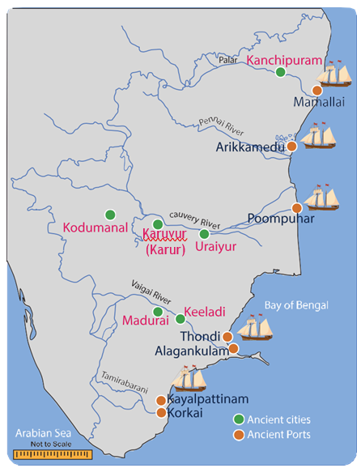
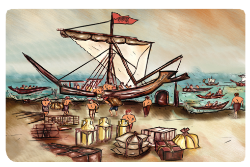
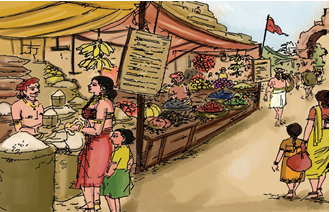
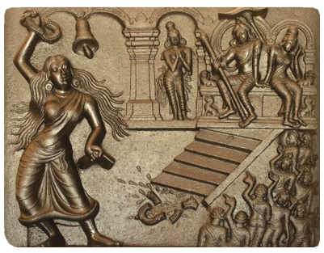
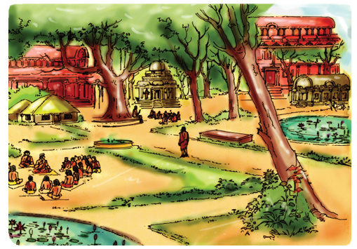
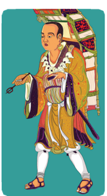

![This picture shows how to use the book. Text book This text book is a tiny spark of informations that make burst a mighty flame of knowledge into the children. Lerning objective it ensure that the students will attain the learning skill. case study case study emphazies the particular part of the content in a brief and crisp manner. do you know do you know infobits and amazing fact drive to the effective and interesting teaching learning process. hots hots enable the analytical and critical skill. maps maps are made for better knowledge of places and position. Q R code Given to make content more interesting and dynamic in nature to enhance the thinking skill. Recap summary or recap or wrap up gives an opportunity to recall the content which already learnt. exercises excercises are made fessible to student of all level. Activity activity helps to experience the content effectively.](images/image-201.png)
Unit |
Title |
Page number |
Month |
History unit 1 |
Page number122 |
Month June |
|
History unit 2 |
Page number 132 |
Month July |
|
History unit 3 |
Page number 147 |
Month August |
|
History unit 4 |
Page number 168 |
Month August & September |
|
Geography unit 1 |
Page number 182 |
Month June |
|
Geography unit 2 |
Page number 201 |
Month July & August |
|
Civics unit 1 |
Page number 219 |
Month June |
|
Civics unit 2 |
Page number 231 |
Month July |


To know what history is all about.
To understand the importance of history
To learn about the lifestyle of the pre-historic man
To know how paintings portray the daily activities of the pre-historic man
To understand the importance of history and historical researches
Tamilini enters her house from school. Her mother, who was reading a book, greets Tamilini with a hug. She collects her school bag and asks Tamilini to refresh herself. She gives Tamilini some snacks to eat. She then asks Tamilini about the school activities of that day
Mother: Tamilini, what subject did you study today?
Tamilini: History, ma.
Mother: Oh nice! Did you properly understand what history is?
Tamilini: Yeah! I understood something about history. Can you please tell me more about history?
Info Bits.
Telling the Time in History
Time in history is calculated in years using BC (BCE) Before Christ (Before Common Era) and AD(CE) Anno Domini (Common Era).

Do you know.
History is the study of past events in chronological order.
Mother : What is your name?
Tamilini: Tamilini
Mother : Tell me your mother’s name.
Tamilini: Mrs. Sumathi…
Mother : Father’s name?
Tamilini: Mr. Adhiyaman
Mother : Tell me the name of your father’s father?
Tamilini: You mean grandpa? Mr. Chidambaram
Mother: Do you know the name of great grandpa. Mr. Chidambaram’s father?
Tamilini: Grandma always used to tell me about one ‘great grandpa’. You want that great grandpa’s name, amma? mmm…
Info Bits
The term history has been derived from the Greek word “Istoria” which means ‘learning by enquiry’.
Mother: Yes, your great grandpa’s name is Mr. Ramasamy. OK. Often your father shows proudly a very old wooden pen and used to tell us that it was his grandpa’s pen. Do you remember it?
Tamilini: Yes, amma! Normally he keeps it in a beautiful wooden case on his table. Is that the one?
Mother: You are right, Tamilini. We cannot write with that pen now. But father has kept it as a treasure. If you ask your father about that, he will show you the diary written by your great grandpa with that old pen. From that diary, we come to know that your great grandpa was a literate, while most of his villagers were illiterates. Further, we can understand the lifestyle of that period and also about activities from his diary writings
Tamilini: Can this small diary record so much of news, amma?
Mother: Yes, Tamilini. We understand the period and lifestyles of people of Old Stone Age from used stone tools, like what you understand about your grandpa and his time from his diary writing

In ancient period, the people lived in caves, used to draw paintings in rocks called Rock Painting. They might have wished to record their activities through these paintings.
Some major Indian excavated sites

Tamilini: What are the other sources that help us understand the lifestyles of Stone Age people?
Mother: We came to know their hunting style through their paintings on the rocks and the walls of the caves.
Tamilini: Rock paintings? It sounds really surprising. Why did they draw these paintings?
Info Bits
Numismatics The study of Coins.
Epigraphy The study of inscription.
Mother: Some would have stayed back, without joining the hunting team. So for their benefit, these pictures could have been drawn. They might have done it as a part of their pastime.
Tamilini: Certainly amma. That’s how we identify their lifestyles. Isn’t it, amma?
Mother: Well said, Tamilini. The period between the use of first stone tools and the invention of writing systems is pre- history. Stone tools, excavated materials and rock paintings are the major sources of pre-history.
![The picture shows various sources of History such as Inscriptions, coins, monuments, Artefacts, literatures. in architecture palaces example thirumalai nayakar mahal, fort example vellore, temples example tanjore, monastery example tabhang are given. in inscription we have rock edicts, temple wall inscriptions, copper plates. artefacts are toys, tools, ornaments. in monuments we have palaces, fort, temples, stups, monetary. Literatures were classified as secular literature such as epic poem and Religious literatures such as ramayana, mahabharatha. in literary source we have epics and poems, account of foreign travellers, work of Indian authors and folk songs and ballads are given. in devotional literature devaram, nalayira divya prabhandam and tiruvasagam are given.](images/image-208.png) 0
0
Case study A Mighty Emperor Ashoka
The most famous ruler of ancient India was Emperor Ashoka. It was during his period that Buddhism spread to different parts of Asia. Ashoka gave up war after seeing many people grieving death after the Kalinga war. He embraced Buddhism and then devoted his life to spread the message of peace and dharma. His service for the cause of public good was exemplary. He was the first ruler to give up war after victory. He was the first to build hospitals for animals. He was the first to lay roads. Ashoka Chakra with 24 spokes in our national flag was taken from the Sarnath Pillar of Ashoka. Even though Emperor Ashoka was great, his greatness had been unknown until 19th century. The material evidence provided by William Jones, James Prinsep and Alexander Cunningham revealed the greatness of Emperor Ashoka. Based on these accounts, Charles Allen wrote a book titled The Search for the India’s Lost Emperor, which provided a comprehensive account of Ashoka. Many researches made thereafter brought Ashoka’s glorious rule to light. These inscriptions were observed on the rocks, Sanchi Stupa and Sarnath Pillar and helped to understand the greatness of Ashoka to the world.


Now one can understand the importance of historical research.
But for the efforts of scholars, the greatness of Emperor Ashoka would not have come to light.
Mother: Do you know what proto history is?
Tamilini: That is the period between pre-history and history.
Mother: Exactly. The period for which records in writing are available but not yet deciphered is called proto history. Today, we are leading a safe life with all modern equipment. But our ancestors did not live in such a safe environment. There might have been chances of wild animals entering their caves. But they realized that dogs could help them to prevent the entry of such dangerous animals by its sniffing skill. Hence, they started domesticating dogs for their protection and hunting activities.
From this, we also know how inscriptions, monuments, copper plates, accounts of foreigners or foreign travelers and folk tales play a vital role in constructing and reconstructing history.
Tamilini: Now, I completely understand what history is, amma.
Thank you, amma.
The life styles of pre historic people can be understood from the stone tools, rock paintings, fossils and other excavated materials.
Proto history is the period between pre-history and history.
Early humans domesticated dogs for their protection and hunting activities.
Mighty Emperor Ashoka followed the path of peace and dharma.
Ashoka Chakra with 24 spokes in our national flag was taken from Sarnath Pillar of Ashoka.
1 |
Sources |
- |
a place, person, text or object from which some data can be obtained |
2 |
Ancestor |
- |
a person related to you who lived a long time ago |
3 |
Dharma |
- |
righteousness |
4 |
Monument |
- |
a statue, building or other structure built by a notable person |
5 |
Inscription |
- |
written records engraved on stones, pillars, clay or copper tablets, caves and walls of temples. |
6 |
Historian |
- |
A person who excelled in history |

1. What was the step taken by the early man to collect his food?
a. Trade
b. Hunting
c. Painting
d. Rearing of animals
1. Statement: Pre historic man went along with the dog for hunting.
Reason: Dogs with its sniffing power would find out other animals.
a. Statement is true, but reason is wrong.
b. Statement and reason are correct.
c. Statement is wrong, and reason is correct.
d. Both statements and reasons are wrong.
2. Statement: The objects used by the early man are excavated. They are preserved to know the lifestyle of the people.
Find out which of the following is related to the statement:
a. Museum
b. Burial materials
c. Stone tools
d. Bones.
3. Find out the wrong pair
a. Old stone age |
- |
Stone tools |
b. Rock paintings |
- |
Walls of the caves |
c. Copper plates |
- |
A source of history |
d. Cats |
- |
First domesticated |
4. Find the odd one
a. Paintings were drawn on rocks and caves.
b. There were paintings depicting hunting scenes.
c. It was drawn to show his family members about hunting.
d. The paintings were painted by using many colors.
1. The Old Stone Age man lived mostly in dash
2. dash is the father of history.
3. dash was the first animal tamed by Old Stone Age man.
4. Inscriptions are dash sources.
5. Ashoka Chakra has dash spokes.
1. Stone tools belonging to Old Stone Age have been excavated at Athtirampakkam near Chennai.
2. The materials used by the ancient people are preserved in the museums by the Archaeological Department.
3. During the period of Ashoka, Buddhism spread across the country.
a. Rock paintings |
- |
copper plates |
b. Written records |
- |
the most famous king |
c. Ashoka |
- |
Devaram |
d. Religious Literature |
- |
to understand the lifestyle |
1. Can you say any two advantages of writing diary?
2. How do we know the people’s lifestyle of the Old Stone Age?
3. Is inscription a written record?
4. What is proto history?
5. Name an epic.
1. What is history?
2. What do you know about the pre historic period?
3. What are the sources available to know about the pre-historic period?
4. Mention the places from where we got pre-historic tools.
5. What are the benefits of a museum?
6. Name some tools used by early man to hunt animals.
7. Why were paintings drawn on rocks?
8. Name any two artefacts?
1. How were dogs useful to pre historic men?
2. Compare the lifestyle of Old Stone Age man with present day lifestyle.
1. Write down the important events of your family with years. Draw a timeline with the help of your teacher or with your classmates.
2. Early man used stones as a weapon. Make an album showing the various uses of stone.
3. Identify the category of the following sources of history.
a. Urns excavated from Adhichanallur.
b. Copper plates of Velvikudi.
c. Mahabharatha.
d. Sanchi Stupa.
e. Pattinappaalai.
f. The earthernwares from Keezhadi.
g. Toys of Indus Civilisation
h. Big Temple of Thanjavur.
1. Make some weapon models used by the Old Stone Age man using clay.
2. Discuss with your grandpa, grandma, neighbours and teachers and collect information about your street, village, town or school.
With that collected data, try to write its history titling your writing as “I am a Historian”.
Early men scribbled and painted on me…Today they used me to build houses and lay roads. who am I? Answer: dash |
Name any two archaeological sources? Answer: dash |
Name the types of literary sources? Answer: dash |
Expand BC(BCE). Answer: dash |
what is the meaning of the Greek word “Istoria”? Answer: dash |
Expand AD(CE). Answer: dash |
Dash is the study of inscriptions. Answer: dash |
Dash is the study of coins. Answer: dash |
I can help you to talk, see, hear, write and read. There is no world without me. Who am I? Answer: dash |
Mark the following places in the political map of India.
a. Delhi
b. Chennai
c. Tamil Nadu
d. Andhra Pradesh
e. Kerala
f. Karnataka
1. What is History? www.community.dur.ac.uk
2. Helping Your Child Learn History.
![This image shows ICT corner which use to explain what is history? steps in volved in using this ICT corner, open the browser and copy and paste the link given below or type the U R L given or scan the Q R code. Time line page will open. Type your name and the project name in the corresponding boxes. Click on the empty timeline. A menu box will appear with label, description and choose image boxes. Enter the details choose the image and click the tick mark. After entering all the details in chronological order click finish and save final to save your project. Time line project URL http://www.readwritethink.org/files/resources/interacives/timeline_2/. also the picture contains QR code with reference number Q 2 E I 7](images/image-214.png)
To know the origins of humans
To learn about the different stages of human evolution from nomadic hunting-gathering to a settled life
To know about the stone implements of the pre historic humans
To understand the use of fire and wheel
To know the significance of rock paintings of the ancient humans


Tamilini, a school student of Class VI, visited a Science Centre accompanied by her grandmother. There they saw a time machine. The operator of the time machine explained the working of the machine.
Operator: If you press different buttons in the machine, it would take you to the chosen period of time. Why don’t you enjoy the experience of watching different periods of time using this machine?
(After listening to the operator, both Tamilini and her grandmother were excited and decided to have the experience of the time machine.)
Tamilini: Can we go forward and see how 2200 A D (C E) would be, grandma?
Grandma: What is so interesting about our future in 2200 A D (C E), Tamil? Let’s go backward and see how our past was like.
Do you know
The story of human evolution can be scientifically studied with the help of archaeology and anthropology.
Tamilini: You sound right, grandma.
Grandma pushed the button to 1950 A D (C E). They saw mostly people walking, a few riding bicycles and buses appearing rarely on the roads. Slowly they moved back to 1850. There were no buses or cycles. Carts pulled by mules and bullocks were seen on the roads. Horse-drawn cart was a rare occurrence.
Tamilini then turned the button to 8,000 years back. People were engaged in raising crops and livestock. She pushed the button to get a picture of life 18,000 years ago. She saw the humans living in caves. They were using tools made of stones and bones for hunting. Tamilini was frightened by the hunting scene and pushed the button forward to return to the present.


Grandma: Are you afraid, Tamil?
Grandma urged Tamilini to go further backward to see the ancient humans who lived with the apes. But Tamilini was not inclined. So, both of them left the spot.
Tamilini: Grandma, will you tell me the story of evolution of humans?
Grandma: Yes, certainly.
Grandma: Anthropologists have unearthed the footprints of humans in a country called Tanzania, which is in eastern Africa. They were found in rock beds submerged under the sand.
Info Bits
Archaeology is the study of pre historic humans remained materials used by pre historic humans. Excavated material remains are the main source for archaeological studies.
![This image explains various stage of human evolution with their special characters such as australopithecus between 4million and 2 million yerar. who are proto human evolved in eastern africa. homo habilis evolved 2.3 and 1.4 million years ago. presence of big toe to hold tightly and less protruding face. tool maker. Homo eractus approximately 1.8 million years ago. walked in straight position (posture). He had the knowledge of the fire. Neanderthal between 130 thousand and 40 thousand years. not family human. Different from Africans their tools were crude. Hunting skills were also poor. There are evidences of burying the dead. evidences are seen at Neanderthal in Germany. Homo sapiens 300 thousand years ago. Wise man. Modern human being. hunting and gathering society. still used crude stone implement. Moved out of Africa and settled in Europe and Asia. cromagnons the present modern human. 50 thousand years ago in eastern Africa and 40 thousand years ago in west Asia and in south eastern Europe. beginning of human life. used not only implements made of stone but also of bone. Their weapons included harpoons and spear throwers.](images/image-219.png)
Info Bits
Anthropology is the study of humans and evolutionary history. The word anthropology is derived from two Greek words Anthropos meaning man or human and logos meaning thought or reason. Anthropologists attempt, by investigating the whole range of human development and behavior, to achieve a total description of cultural and social phenomena.
Radio carbon dating was used to ascertain the period. It was found out that the foot prints of humans they had discovered were about 3.5 million years old. When there is sudden change in nature, the living beings adapt themselves to the changes and survive. Humans have thus evolved over millions of years adapting themselves to the changing times.
Do you know
People and their Habitat
Australopithecus East Africa
Homohabilis South Africa
Homoerectus Africa and Asia
Neanderthal Eurasia (Europe and Asia)
Cro-Magnons France
Peking China
Homo sapiens Africa
Heidelbergs London
Info Bits
Cro-Magnons learned to live in caves. Lascaus caves in France is the evidence for cave living of Cro-Magnons. They habitude to bury the dead.
Migration of Homo sapiens from east Africa to other parts of the world.
![The image shows migration man from Africa to the rest of world in various time periods. 200 thousand years ago started from Africa. 100 thousand years ago they arrived to middle east Asia. 70 thousand years ago arrived to India and south east Asia and China. 50 thousand years ago arrived to Australia. 40 thousand years ago arrived to Europe. 25 thousand years ago arrived to present Russia. from Russia they migrate to north America via Alaska around 15000 years ago. From Australia they settled in New Zealand about 1500 years ago.](images/image-220.png)

Tamilini: Grandma, will you explain it in detail?
Grandma: Human evolution means the process through which the humankind changes and develops towards an advanced stage of life. See how the modern human has evolved.
1. Humans in erect position and walking on two legs happened much later.
2. Changes in thumb so that they can hold things tightly.
3. Development of brain.
Homo sapiens who migrated out of eastern Africa settled in different parts of the world. Their lifestyle also evolved and they made it suitable to the environs in which they lived. So, humans in different places adopted different forms of lifestyle. Based on the weather, climate and nature of the living place, their physique and complexion also differed. This resulted in the formation of different races. Human procreation resulted in an increase in the population.
HOTS
Why did humans become hunter- gatherers? Did the landscape play any role?
Tamilini: Grandma, it’s fantastic.
Grandma: Yes, it is. I shall now explain to you in detail how the Homo sapiens engaged in hunting and gathering.
Hunting and Food Gathering
Tamil, you will be surprised to know that millions of years ago, our ancestors led a nomadic life. They lived in groups in a cave or a mountain range. Each group consisted of 30 to 40 people. They kept on moving in search of food. They hunted pig, deer, bison, rhino, elephant and bear for food. They also ate the animals killed by other wild animals like tiger. They learnt the art of fishing. They collected honey from beehives, plucked fruits from the trees and dug out tubers from the ground. They also collected grains from the forest. Once the food resource got exhausted in one area, they moved to another place in search of food. They wore hides of animals and barks of trees and leaves for protecting their bodies during winter. So, humans began hunting to satisfy their need for food.
Hunting Methods
1. Go as a group and hunt the prey.
 ,
,
2. Dig a pit and trap the animals and hunt.

Art of Flaking
Keeping a stone in the bottom and sharpening it with another stone.
To make a stone tool, two stones were taken. One, was used as a hammer to sharpen the other for removing flakes.

Grandma: Tamilini, do you know the weapons that the early humans used for hunting?
Tamilini: I have no idea, grandma. Can you tell me about hunting practices? Stone Tools and Weapons.
Grandma: Hunting was the main occupation of humans in the past. It was difficult for humans to kill a big animal with a stick or a stone. So, they decided to use sharpened weapons.

The best stone for the making weapons was chikki-mukki kal (flint). It is known for its strength and durability. Humans spent many hours in search of a flint stone. They made sharp weapons and tools with the help of the stones and fitted them with wood to grip them. Humans created tools like axes with big stones.
HOTS
Are there hunters in your area? Why is hunting banned now?
Tamilini: Why were axes made, grandma?
Grandma: The axes were made to cut trees, remove barks, dig pits, hunt animals and remove the skin of animals.
Grandma: Tamil, do you know what the next stage was after making stone tools?
Tamilini: I don’t know grandma. What would it be?
Grandma: Humans discovered the use of fire.


Do you know
Even today in the villages of Nilgiris district in Tamil Nadu, people have the habit of making fire without use of match box.
At first, humans were afraid of fire and lightning. Probably fire caused by lightning had killed many wild animals. Humans tasted the flesh of the killed animals, which was soft and tasty. This made humans aware of the effect of fire. They used flint stone to make fire and used it to protect them from predators, for cooking food and for creating light during night. Thus, fire became important for man in olden times.
HOTS
Is there any object that can bring heat and fire other than a match box?
Tamilini: What next, grandma?
Grandma: You will be surprised to know that the next human invention was the wheel. This was the first scientific invention of humans using their brain and cognitive skills.
Invention of the Wheel

The invention of wheel by humans is considered to be the foremost invention When humans saw the stones rolling down from the mountains, probably they would have got the idea of making the wheel.
Pot Making

Humans learned to make pot with clay. The invention of wheel made pot making easier, and the pots made were burnt to make it stronger. They decorated pots with lot of colors. The color dyes were made from the extracts of roots, leaves or barks. These natural dyes were used in rock paintings.
Grandma: Can you identify what is in this picture?

Hunting scene in which men and women are taking part
Tamilini: Yeah. Some blurred tweaks are seen. Someone has drawn.
Grandma: No, this is our ancestor’s handwork. In fact, it is the first art of humanity. Before the use of language, humans expressed their feelings through actions and also recorded it in rock paintings.
Ancient Rock Paintings
In India, we can see many paintings in rocks and caves. The rock paintings give some information about the past. Approximately there are 750 caves, in which 500 caves have paintings. There are many more undiscovered caves. The rock paintings depict hunting pictures of the male and the female, dancing pictures and pictures of children playing.
Tamilini: Oh! We are able to gain some knowledge about the past lifestyle through these paintings. Isn’t it, Grandma?
Grandma: You said it rightly, Tamil. These rock and cave paintings tell us many stories about our ancestors.
Tamilini: Okay, grandma! Now tell me how humans reached the next stage.
Grandma: There were many dangers involved in hunting. Due to large-scale hunting in the mountain areas and in the forests, many animals became extinct. Non availability of meat forced the humans to look for fruits and vegetables for food.
Tamilini: Now they would have thought of producing food for themselves. Is it not grandma?
From Nomadic to Settled Life The World’s Earliest Farmers
Grandma: Very well said, Tamil. The seed of fruits and the nuts they ate were thrown into the soil. During rains, the soil gave it life. Some days later, the saplings sprouted from the soil. By observation and logic, they learn that:
a. a plant grows from a single seed and yields lots of fruits and vegetables.
b. seeds that fall in the river beds sprout easily.
c. plants grow faster in water fed areas.
d. alluvial soil is more suitable for plant growth than any other.
With the above knowledge they gained, they realised that with proper sowing and nurturing, they could increase the number of plants more than the ones that grew naturally. Thus, agriculture and farming came into existence. They domesticated the animals and used them in their farming.

Breeding of animals now became an important part of their life. Oxen were used for ploughing. Oxen made the practice of agriculture easier. Life was becoming organized than it was, when they were hunting. It enabled them to settle down in a place. Now with settlement came the problem of utensils and vessels for cooking and storage. The potter’s wheel and fire solved this problem.
The invention of plough helped the farming practices. Farming started with the clearing of land and burning the left-over shrubs. They ploughed the land, sowed seeds in them and harvested the produce.
During the pre-historic period, humans lived in caves and depicted their daily events in drawings. Mostly pictures of animals were drawn.
Pre-Historic Rock Art of Tamilnadu


Once the fertility of the soil decreased, they moved to a new place. Initially agriculture was done for immediate food requirement. Later when they found out ways to increase production, they started storing the produce. The food products stored were used during the lean harvest periods. By their experience, they understood that land close to the river side was suitable for farming. So, they decided to stay there permanently.
Tamilini: How about domestication of animals, grandma?
Grandma: Humans thought of ways to better their skills at hunting.
They found out that the dogs could sniff other animals and chase them away. So, humans found them useful for hunting. Thus, dogs became the first animal to be domesticated by humans. Following the dogs, they started domesticating hen, goat and cow.
Tamilini: What next?
Grandma: Humans stayed on the plains for a long time. During this period, they have not only learnt agriculture, but slowly developed skills of handicraft. Permanent settlement in a place increased the yield of crops. Now they had grains in excess of what they consumed. The surplus grains were exchanged with other groups for the other things they were in need of. This is called the barter system. Thus, trade and commerce developed and towns and cities emerged.
Tamilini: Thank you, grandma. The information you have shared with me is very helpful, and I would share it with my friends at school tomorrow.
Grandma: Very good. Congratulations Tamilini!
Evolution means the process in which humankind changes and develops into an advanced stage.
Homo sapiens migrated out of eastern Africa and settled in different parts of the world.
Humans with the help of the Chikki-mukki – kal (flint) made sharp weapons and tools.
Fire was used by early human to protect him from predators, for cooking food and for the light during night.
The invention of wheel is considered to be the foremost invention. It made pot making easier.
We get knowledge about the past lifestyle through rock paintings.
1. |
Time machine |
- |
a machine capable of taking a person backward or forward in time |
2. |
Evolution |
- |
gradual change leading to a more advanced development |
3. |
Predator |
- |
animal that hunts and kills other living things for food |
4. |
Footprints |
- |
the impression of the foot of a person or an animal |
5. |
Hides |
- |
tanned skin of an animal |
6. |
Million |
- |
1,000,000 (10 lakhs) |
7. |
Nomadic |
- |
Herdsmen without any fixed home moving about in search of pastures for their cattle. |
8. |
Barter |
- |
Exchange of goods without involving money |
9. |
Prey |
- |
An animal that is hunted and killed by another for food |

1. The process of evolution is dash
a. direct
b. indirect
c. gradual
d. fast
2. Tanzania is situated in the continent of dash
a. Asia
b. Africa
c. America
d. Europe
1. Statement: Migration of man of different Parts of the world resulted in changes of physic and colour
Reason: climatic changes.
a. Statement is correct.
b. Reason is wrong.
c. Statement and Reason is correct.
d. Statement and Reason is wrong.
a. Australopithecus - Walked on both legs
b. Homo habilis - Upright man
c. Homo erectus - Wise man
d. Homo Sapiens - Less protruding face
1. dash unearthed the footprints of early humans in Tanzania.
2. Millions of years ago, our ancestors led a dash life.
3. The main occupations of the ancient humans were dash and dash
4. The invention of dash made farming easier.
5. Rock paintings are found at dash in Nilgiris.
1. Anthropology is the study of coins.
2. Homo erectus (Java man) had the knowledge of fire.
3. The first scientific invention of humans was wheel.
4. Goat was the first animal to be domesticated by humans.
1. What method is used to find out the age of the excavated materials?
2. What did early humans wear?
3. Where did early humans live?
4. Which animal was used for ploughing?
5. When did humans settle in one place?
1. What is evolution?
2. Write any two characteristics of Homo sapiens?
3. Why did humans move from place to place?
4. Describe the ancient methods of hunting?
5. Why were axes made?
6. How would you define archaeology?
7. What do you know about anthropology?
1. Importance of invention of wheel from the ancient period to the modern period.
Prepare an album collecting the pictures of ancient humans of different ages.
The invention of dash made pot making easier. Answer: dash |
Barter system Means dash Answer: dash |
Name any two weapons used by early human for hunting. Answer: dash |
Which is the best stone for making weapons? Answer: dash |
Towns and cities emerged because of dash and dash Answer: dash |
Which was the first scientific invention of humans? Answer: dash |
Identify the pictures in rock paintings. Answer: dash |
Which was the main occupation of early humans? Answer: dash |
What do cave paintings tell us? Answer: dash |
Where did the early humans live? Answer: dash |
Dash is related to the field of archaeology. Answer: dash |
Name any two animals domesticated by early human. Answer: dash |
1. Make pots and tools by using clay.
2. Collect different types of moving dolls and tell them to change the wheels with different shapes like square, triangle etc., and find out how it moves.
On the outline map of India, mark the following places:
1. Adichanallur
2. Attirampakkam
3. Bhimbetka
4. Hunasagi Valley
5. Lothal
1. www.humanorgins.sid.edu
![This image shows ICT cornor which is helpful to study human evolution. The steps for using this ICT corner, Type the given URL in the browser. Human evolution timeline interactive page will open. in the pictography horizontal bottom blue line indicates major milestone in human evolution and pink colour indicates species. interact with the pictography by clicking and object on the graph. click the milestones to know the achievement of human during the period. the purple colour on the top of the pictograph indicates the climate fluctuation that shaped the evolution. Click the brushed reddish colour to identify the species name, and its brief history on duration and geographical range. the species range from sahelanthropus tchadensis to homo sapiens. use magnifier button to enlarge a particular space on the timeline. Time line project URL http://humanorgins.si.edu/evidance/human-evolution:timeline-interactive. also it contains a QR code with reference number K4PG7](images/image-238.png)

To learn how Indus Civilisation is related to other contemporary civilisations
To understand the urban nature of the Indus Civilisation
To know the lifestyle of the people of this civilisation
To identify and study the major sites of Indus Civilisation
To mark their geographical location in maps

All these civilisations were established only in places near the rivers, most commonly along their banks.
Time line

Initially, people lived in groups. Then they formed communities out of these groups. Then evolved the societies which in due course become civilisations.
Why did people settle near rivers?
People preferred to settle near the rivers for the reasons given below.
The soil is fertile.
Fresh water is available for drinking, watering livestock and irrigation.
Easy movement of people and goods is possible.
Discovery of a lost city – Harappa
The ruins of Harappa were first described by the British East India Company soldier and explorer Charles Masson in his book. When he visited the North-West Frontier Province which is now in Pakistan, he came across some mysterious brick mounds. He wrote that he saw a “ruined brick castle with very high walls and towers built on a hill”. This was the earliest historical record of the existence of Harappa.
In 1856 when engineers laid a railway line connecting Lahore to Karachi, they discovered more burnt bricks. Without understanding their significance, they used the bricks for laying the rail road.
In the 1920s archaeologists began to excavate the cities of Harappa and Mohenjo- Daro. They unearthed the remains of these long-forgotten cities. In 1924 the Director General of A S I, Sir John Marshall, found many common features between Harappa and Mohenjo-Daro. He concluded that they were part of a large civilisation.
Some slight differences are found in the earthenwares of Harappa and Mohenjo-Daro. This made the researchers conclude that Harappa was older than Mohenjo-Daro.

The Archaeological Survey of India (A S I) was started in 1861 with Alexander Cunningham as Surveyor. Its headquarters is located in New Delhi.
How do archaeologists explore a lost city?
Archaeologists study the physical objects such as bricks, stones or bits of broken pottery (sherds) to ascertain the location of the city and time that it belongs to.
They search the ancient literary sources for references about the place.
They look at aerial photographs of the excavation sites or cities to understand the topography.
To see under the ground, they may use a magnetic scanner
The presence and absence of archeological remains can be detected by RADAR and Remote Sensing Methods.
Sites in Indian borders
Archaeologists found major Harappan sites within Indian borders.

Observe the picture and fill the tabular column.
Name of the place |
Name of the state |
Important finds |
|
|
|
|
|
|
|
|
|
|
|
|

Time Span of Indus Civilisation

Geographical range: South Asia
Period : Bronze Age
Time : 3300 to1900 BC(BCE) (determined using the radiocarbon dating method)
Area : 13 lakhs square kilometre.
Cities : 6 big cities
Villages: More than 200
Urban Civilisation
Harappan civilisation is said to be urban because of the following reasons.
Well-conceived town planning
Astonishing masonry and architecture
Priority for hygiene and public health
Standardized weights and measures
Solid agricultural and artisanal base
Unique Features of Harappan Civilisation
Town planning is a unique feature of the Indus Civilisation. The Harappan city had two planned areas.

Mehergarh – the Precursor to Indus Civilisation
Mehergarh is a Neolithic site. It is located near the Bolan Basin of Balochistan in Pakistan. It is one of the earliest sites known. It shows evidence of farming and herding done by man in very early times. Archaeological evidence suggests that Neolithic culture existed in Mehergarh as early as 7000 BC (BCE).
Streets and Houses

The streets are observed to have a grid pattern. They were straight running from north to south and east to west and intersected each other at right angles.
The roads were wide with rounded corners.
Houses were built on both sides of the street. The houses were either one or two storeys.
Most of the houses had many rooms, a courtyard and a well. Each house had toilets and bathrooms.
The houses were built using baked bricks and mortar. Sun-dried bricks were also used. Most of the bricks were of uniform size. Roofs were flat.
There is no conclusive evidence of the presence of palaces or places of worship.
Do you know
why burnt bricks are used in construction?
They are strong, hard, durable, resistant to fire and will not dissolve in water or rain.

Info Bits
Bronze Age
It is a historical period characterised by the use of articles made of bronze.
Drainage System
Many of these cities had covered drains. The drains were covered with slabs or bricks.
Each drain had a gentle slope so that water could flow.
Holes were provided at regular intervals to clear the drains.

House drains passed below many lanes before finally emptying into the main drains.
Every house had its own soak pit, which collected all the sediments and allowed only the water to flow into the street drain.
The Great Bath (Mohenjo-Daro)

The great bath was a large, rectangular tank in a courtyard. It may be the earliest example of a water-proof structure.
The bath was lined with bricks, coated with plaster and made water-tight using layers of natural bitumen.
There were steps on the north and south leading into the tank. There were rooms on three sides.
Water was drawn from the well located in the courtyard and drained out after use.

The Great Granary (Harappa)
The granary was a massive building with a solid brick foundation.

Granaries were used to store food grain.
The remains of wheat, barley, millets, sesame and pulses have been found there.
A granary with walls made of mud bricks, which are still in a good condition, has been discovered in
Rakhigarhi, a village in Haryana, belonging to mature Harappan phase.
The Assembly Hall
The Assembly Hall was another huge public building at Mohenjo-Daro. It was a multi-pillared hall (20 pillars in 4 rows to support the roof).

Trade and Transport
Harappans were great traders.
Standardised weights and measures were used by them. They used sticks with marks to measure length.

They used carts with spokeless solid wheels.
There is evidence for extensive maritime trade with Mesopotamia. Indus Seals have been found as far as Mesopotamia (Sumer) which are modern-day Iraq, Kuwait and parts of Syria.
King Naram-Sin of Akkadian Empire (Sumerian) bought jewelry from the land of Melukha (a region of the Indus Valley) was mentioned in an epic regarding Naram-Sin.
Cylindrical seals similar to those found in Persian Gulf and Mesopotamia have also been found in the Indus area. This shows the trade links between these two areas.
A naval dockyard has been discovered in Lothal in Gujarat. It shows the maritime activities of the Indus people.
Dockyard at Lothal
Lothal is situated on the banks of a tributary of Sabarmati River in Gujarat.

Leader in Mohenjo-Daro

A sculpture of a seated male has been unearthed in a building, with a head band on the forehead and a smaller ornament on the right upper arm.
His hair is carefully combed, and beard finely trimmed.
Two holes beneath the ears suggest that the head ornament might have been attached till the ear.
The left shoulder is covered with a shawl-like garment decorated with designs of flowers and rings.
This shawl pattern is used by people even today in those areas.
Technology
Indus people had developed a system of standardised weights and measures.
Ivory scale found in Lothal in Gujarat is 1704mm (the smallest division ever recorded on a scale of other contemporary civilisations).

Info Bits
The word ‘civilisation’ comes from the ancient Latin word civics, which means ‘city’.
Do you know
This little statue was found at Mohenjo-Daro. When Sir John Marshall saw the statuette known as the dancing girl, he said, “When I first saw them, I found it difficult to believe that they were pre-historic modeling. Such as this was unknown in the ancient worlds up to the age of Greece. I thought that these figures had found their way into levels some 3000 years old to which they properly belonged”.

Do you know
KVT Complex (Korkai-Vanji-Thondi) spread over Afghanistan and Pakistan has many places, names of those were mentioned in sangam literature.
Korkai, Vanji, Tondi, Matrai, Urai and Kudalgarh are the names of places in Pakistan.
Gurkay and Pumpuhar in Afghanistan are related to the cities and ports mentioned in the Sangam Age. The names of the rivers Kawri and Poruns in Afghanistan and the rivers kaweri wala and phornai in Pakistan also occur in sangam literature.

Do you know
The hidden treasures of the Indus civilisation Inscriptions (written in a script of those times) can provide us information about customs, practices and other aspects of any place or time. So far, the Indus script has not been deciphered. Therefore, we must look for other clues to know about the Indus people and their lifestyle.
Apparel
Cotton fabrics were in common use.
Clay spindles unearthed suggest that yarn was spun.
Wool was also used.

Love and peace
Settlements were built on giant platforms and elevated grounds.
The Indus Civilisation seems to have been a peaceful one. Few weapons were found and there is no evidence of an army.
They displayed their status with garments and precious jewellery.
They had an advanced civic sense.

Ornaments
Ornaments were popular among men and women.
They adorned themselves with necklaces, armlets, bangles, finger rings, ear studs and anklets.
The ornaments were made of gold, silver, ivory, shell, copper, terracotta and precious stones.

Horse and iron were unknown to the people of Indus.
Do you Know
Indus people used the red quartz stone called Carnelian to design jewellery.
Info Bits
Copper was the first metal discovered and used by humans.
Who Governed them?
Historians believe that there existed a central authority that controlled planning of towns and overseas trade, maintenance of drainage and peace in the city.

Occupation
The main occupation of the Indus Civilisation people is not known. However, agriculture, handicrafts, pottery making, jewellery making, weaving, carpentry and trading were practiced.
There were merchants, traders and artisans.
Rearing of cattle was another occupation.
People of those times knew how to use the potter’s wheel.
They reared domesticated animals.

Pottery
Pottery was practiced using the potter’s wheel. It was well fired. Potteries were red in colour with beautiful designs in black.
The broken pieces of pottery have animal figures and geometric designs on it.

Religious Belief
We don’t have any evidence pointing to specific deities or their religious practices. There might have been worship of Mother Goddess (which symbolized fertility), which is concluded based upon the excavation of several female figurines.

Toy Culture
Toys like carts, cows with movable heads and limbs, clay balls, tiny doll, a small clay monkey, terracotta squirrels eating a nut, clay dogs and male dancer have been found.
They made various types of toys using terracotta, which show that they enjoyed playing.

Info Bits
The earliest form of writing was developed by Sumerians.
What happened to Harappans?
By 1900 BCE, the Harappan culture had started declining. It is assumed that the civilisation met with
repeated floods
ecological changes
invasions
natural calamity
climatic changes
deforestation
an epidemic
Do you know
Archaeological site at Mohenjo-Daro has been declared as a World Heritage Site
by UNESCO.
Do You Know
Radiocarbon Dating Method: A Standard Tool for Archaeologists
Also known as C14 method, the radiocarbon method uses the radioactive isotope of carbon called carbon14 to determine the age of an object.
General Facts about Indus Civilisation
It is among the oldest in the world.
It is also the largest among four ancient civilisations.
The world’s first planned cities are found in this civilisation.
The Indus also had advanced sanitation and drainage system.
There was a high sense of awareness on public health.
When man began to live in a settled life, it marked the dawn of civilisation.
River valleys were responsible for the growth of civilisation.
Harappan culture was mainly urban in nature.
Cities were well planned with covered drainage and straight wide roads, cutting each other at right angles.
The people of that time had great engineering skills.
The Great Bath is one of the earliest public tanks.
The civilisation extended from:
Makran coast of Baluchistan in the west. Ghaggar-Hakra river valley in the east. Afghanistan in the north east. Maharashtra in the south.
1 |
Archaeologist |
- |
one who studies the remains of the past by excavations and exploration |
2 |
Excavate |
- |
to uncover by digging away |
3 |
Urbanisation |
- |
population shift from rural areas to urban areas |
4 |
Pictograph |
- |
a record consisting of pictorial symbols |
5 |
Steatite |
- |
a soft variety of talc stone |
6 |
Spindles |
- |
a device used to spin clothes |
7 |
Bitumen |
- |
water-proof tar |
8 |
Artefact |
- |
an object shaped by human craft of historical interest |
9 |
Dockyard |
- |
an enclosed area of water in a port for loading, unloading and repair of ships |
10 |
Seal |
- |
an embossed emblem, figure or symbol |
Elsewhere in the World

The Great Pyramid of Giza built by king Khufu in 2500 BCE, built with lime stone.

Mesopotamia (Sumerian period) Ur Ziggurat built by king Ur Nammu in Honour of the Moon God Sin.

Abu Simbel Site of two temples built by Egyptian king Ramises II.

1. What metals were known to the people of Indus Civilization?
a. Copper, bronze, silver, gold, but not iron
b. Copper, silver, iron, but not bronze
c. Copper, gold, iron, but not silver
d. Copper, silver, iron, but not gold
2. Indus Civilisation belonged to
a. old Stone age
b. Medieval stone age
c. new stone age
d. Metal age
3. River valleys are said to be the cradle of civilisation because
a. Soil is very fertile.
b. They experience good climate.
c. They are useful for transportation.
d. Many civilisations flourished on river valleys.
1. Statement: Harappan civilization is said to be an urban civilization.
Reason: It has well planned cities with advanced drainage system.
a. Statement and reason are correct.
b. Statement is wrong.
c. Statement is true, but the reason is wrong.
d. Both statement and reason are wrong.
2. Statement: Harappan civilization belongs to Bronze Age.
Reason: Harappans did not know the use of iron.
a. Statement and reason are correct.
b. Statement is wrong.
c. Statement is correct, but the reason is wrong.
d. Both statement and reason are wrong.
3. Statement: The engineering skill of Harappans was remarkable.
Reason: Building of docks after a careful study of tides, waves and currents.
a. Statement and reason are correct.
b. Statement is wrong.
c. Statement is correct, but the reason is wrong.
d. Both statement and reason are wrong.
4. Which of the following statements about Mohenjo-Daro is correct?
a. gold ornaments were unknown.
b. Houses were made of burnt bricks.
c. Implements were made of iron.
d. Great Bath was made water tight with the layers of natural bitumen
5. Consider the following statements.
1. Uniformity in layout of town, streets, and brick sizes
2. An elaborate and well laid out drainage system
3. Granaries constituted an important part of Harappan Cities
Which of the above statements are correct?
a. 1&2
b. 1&3
c. 2&3
d. all the three
6. Circle the odd one
Oxen, sheep, buffaloes, pigs, horses
7. Find out the wrong pair
a. A S I |
- |
John Marshall |
b. Citadel |
- |
Granaries |
c. Lothal |
- |
Dockyard |
d. Harappan civilization |
- |
River Cauvery |
1. dash is the oldest civilisation.
2. Archaeological Survey of India was founded by dash
3. dash were used to store grains.
4. Group of people form dash
1. Mehergarh is a Neolithic site.
2. Archaeological survey of India is responsible for preservation of cultural monuments in the country.
3. Granaries were used to store grains.
4. The earliest form of writings was developed by Chinese.
Mohenjo-Daro |
- |
raised platform |
Bronze |
- |
red quartz stone |
Citadel |
- |
alloy |
Carnelian |
- |
mound of dead |
1. What are the uses of metal?
2. Make a list of baked and raw foods that we eat.
3. Do we have the practice of worshipping animals and trees?
4. River valleys are cradles of civilisation. Why?
5. Just because a toy move doesn’t mean its modern. What did they use instead of batteries?
6. Dog was the first animal to be tamed. Why?
7. If you were an archaeologist, what will you do?
8. Name any two Indus sites located in the Indian border.
9. In Indus civilisation, which feature you like the most? Why?
10. What instrument is used nowadays to weigh things?
1. What method is used to explore buried buildings nowadays?
2. Why Indus Civilisation is called Bronze Age civilisation?
3. Indus Civilisation is called urban civilisation. Give reasons.
4. Can you point out the special features of their drainage system?
5. What do you know about the Great Bath?
6. How do you know that Indus people traded with other countries?
1. Observe the following features of Indus Civilisation and compare that with the present day.
a. Lamp post
b. Burnt bricks
c. Underground drainage system
d. Weights and measurement
e. Dockyard
2. Agriculture was one of their occupations. How can you prove this? (with the findings)
3. Many potteries and its pieces have been discovered from Indus sites. What do you know from that?
4. A naval dockyard has been discovered in Lothal. What does it convey?
5. Can you guess what happened to the Harappans?
1. Prepare a scrap book. (Containing more information about objects collected from Mohenjo-Daro and Harappa.)
2. You are a young archaeologist working at a site that was once an Indus city. What will you collect?
3. Make flash cards.
(Take square cards and stick picture in one card and the information for the same picture in another card. Circulate among the groups and tell them to match the picture with information.)
4. Draw your imaginary town planning in a chart.
5. Make a model of any one structure of Indus Civilisation using clay, broken pieces of bangles, matchsticks, woolen thread and ice cream sticks.
6. Can you imagine how toys have changed through the ages? Collect toys made of Clay, stone, wood, metal, plastic, fur, electric, electronic.
7. Crossword puzzle.
|
1 |
|
|
|
|
|
8 |
|
|
|
2 |
3 |
|
5 |
|
|
|
|
|
|
|
|
10 |
7 |
|
|
|
|
|
|
|
|
|
4 |
|
|
|
9 |
|
|
|
|
|
|
|
|
|
|
|
6 |
|
|
|
|
|
Top to Bottom
1. Director General of A S I.
2. dash is older than Mohenjo-Daro.
3. This is dash age civilisation.
4. Each house had a dash.
Left to Right
5. Place used to store grains.
6. A dockyard has been found.
7. dash is unknown to Indus people.
8. It is used to make water tight.
Right to Left
9. From this we can get lot of information.
10. This is responsible for research.
Rapid Fire Quiz (Do it in groups)
1. Which crop did Indus people use to make clothes?
2. Which was the first Indus city discovered?
3. Where was Indus Civilisation?
4. Which animal was used to pull carts?
5. Which metal was unknown to Indus people?
6. What was used to make pots?
7. Which is considered the largest civilisation among four ancient civilisations of the world?
1. Making an animal or a pot out of clay.
2. Making terracotta toy with movable limbs.
3. Pot painting (with geometric pattern).
4. Make informational charts and posters.
1. Mark any four Indus sites located within the Indian border.
2. On the river map of India, colour the places where Indus civilisation spread.
3. Mark the following places in the given India map:
a. Mohenjo-Daro
b. Chanhudaro
c. Harappa
d. Mehergarh
e. Lothal

What did Charles Masson see? Answer: dash |
List three things’ people used which we use today? Answer: dash |
What else has been found? Answer: dash |
Can you say three things unknown to Indus people? Answer: dash |
Which metal was unknown to Indus people? Answer: dash |
Which is the oldest civilisation in the world? Answer: dash |
Why dog was the first animal to be tamed? Answer: dash |
Who were the first people to grow cotton? Answer: dash |
Which institution is responsible for archaeological research? Answer: dash |
Was there any river valley civilisation found in Tamil Nadu? Answer: dash |
Name any two Harappan sites which were found in Indian border? Answer: dash |
Can we say the Indus cities as cities of children? Answer: dash |
1. http://www.thenagain.info/webchron/india/harappa.html
2. http://www.archaeologyonline.net/artifact/harappa-mohenjodaro.html

To learn about the greatness of the towns of ancient Tamilagam
To know about Poompuhar, Madurai and Kanchi
To understand the ancient kingdoms of Tamilagam
To gain knowledge about the crafts, markets, manufactures, maritime trade, education and water management in ancient Tamilagam

It is a Government Higher Secondary School. Reciprocating the greetings of the students of VI Standard, the Social Science Teacher signals them to get seated.
Teacher: Wow! You look pretty in your new dress, Tamilini.
Students: Mam, today is her birthday.
Teacher: Wish you a happy birthday Tamilini. Many more happy returns of the day.
Tamilini: Thank you, mam. Teacher: Ok children. Shall we start today's class from Tamilini’s birthday. Students: How come mam? What is the connection between Tamilini’s birthday and today’s class?
Teacher: There is. I shall come to that later. Let us stand up and wish her first.
Students: Happy birthday, Tamil.
Tamilini: Thank you all.
Teacher: Tamil, Is Chennai your home town?
Tamilini: No mam. My home town is Kadavur near Karur.
Teacher: Good. Do you have the habit of visiting your home town?
Tamilini: Yes mam. Every summer I visit my home town.
Teacher: Excellent! Can you tell me the difference between Kadavur and Chennai?
Tamilini: Kadavur is a village. Chennai is a city.
Teacher: Excellent!
Teacher: Can you tell what were the earliest planned cities of ancient India?
Students: Harappa and Mohenjo-Daro, mam.
Teacher: Yes. Very good children. Today we are going to study about the ancient towns of Tamilagam. They are Poompuhar, Madurai, Kanchi. Shall we start?
Students: Ok mam.
Teacher: See we have started today’s lesson with Tamilini’s birthday.
Students: Yes mam.
Do you know
Mesopotamian civilisation is the earliest civilisation in the world. It is 6500 years old.
Teacher: Like Harappa and Mohenjo- Daro in ancient India, there were famous towns in ancient Tamilagam too. Madurai, Kanchi and Poompuhar are prominent among them.
Tamil literature, accounts of foreign travelers and archaeological finds provide us information about the ancient towns of Tamilagam.
Poompuhar
Poompuhar is one of the oldest towns in ancient Tamilagam. This is the place where well known characters of Silapathikaram, Kovalan and Kannagi lived. It was also a port town along the Bay of Bengal. The ports were established for facilitating maritime trade. Even in times past, countries began to export their surplus products and import the scarce commodities by sea. Poompuhar is one such historic port that emerged in the wake of increasing maritime trade. It is a coastal town near the present-day Mayiladuthurai and is located where the river Cauvery drains into the sea.
Poompuhar Port
Poompuhar was also known by names such as Puhar and Kaveripoompattinam. It served as the port of the early Chola kingdom. One of the popular Sangam Literature, Pattinappaalai and Tamil epics, Silappathikaram and Manimegalai, have references to the brisk sea-borne trade that took place in the port city, Puhar.
Silappathikaram, in particular, speaks about the greatness of Poompuhar.

The lead female character of Silappathikaram is Kannagi. Her father is Maanaigan. Sea traders are known by the name Maanaigan. The male character Kovalan’s father is Maasathuvan. Massathuvan means a big trader. It is clear from the text that Poompuhar was a place where big traders and sea traders had settled down.
Numerous merchants from foreign countries such as Greece and Rome landed at Poompuhar. Due to busy and continuous trade, many of them stayed on indefinitely in Poompuhar. There are evidences of foreigner's settlements in the town. People speaking many languages inhabited Poompuhar in its glorious days. As loading and unloading of ships took some months, the foreign traders began to interact with the local people during that period. This enabled the natives to learn foreign languages for communication. Similarly, the foreigners also learnt Tamil to communicate with the natives. This contact facilitated not only exchange of goods but also languages and ideas resulting in cultural blending.
The traders of Poompuhar were known for their honesty and integrity. They sold goods at legitimate prices. Pattinappaalai states that “selling any commodity at a higher price was considered bad”.
The author of Pattinappaalai, Kadiyalur Uruttirangannanar, belonged to 2nd century BC(BCE). This is indicative of Puhar’s antiquity. Horses were imported by sea. Pepper was procured through the land route. Gold that came from Vadamalai was polished and exported to the overseas countries. Sandal from Western Ghats, pearls from southern sea, corals from eastern sea and food items from Eelam were imported.
Poompuhar had been built differently from other towns. Each social group had a separate settlement. Streets were broad and straight, dotted with well-designed houses. There was also a dockyard.
We can learn about the life of the people of Puhar by reading Pattinappaalai and “Puhar Kandam” of Silappathikaram.
Puhar was a busy port up to 200 AD(CE). It might have been either washed away by sea or destroyed by big shore waves. The remains of that destruction can still be seen in the present Poompuhar town.
Madurai
Madurai has been one of the oldest cities in India. Its antiquity can be understood from the sobriquet “Sangam Valartha Nagaram” it has earned.
Pandyas, the Cholas and later the Kalabras ruled Madurai in the ancient period. During medieval times, later Cholas and later Pandyas followed by the Nayaks ruled this historic town. This has resulted in cultural blending. Trade flourished and evidence for this has been unearthed in archaeological excavation done in Keezhadi near Madurai.
Madurai is proudly associated with Tamil sangam (academies), which worked for the promotion of Tamil language. Forty-nine poets were associated with the last Sangam. Ahil, fragrant wood, was brought from Port Thondi to Madurai. King Solomon of ancient Israel imported pearls from Uvari near the Pandyan port, Korkai.
Thoonga Nagaram

Madurai had Naalangadi and Allangadi.
Naalangadi – Day Market. Allangadi – Evening Market.
Madurai is known as Thoonga Nagaram (the city that never sleeps). Madurai was a safe place where women purchased things from Allangadi without any fear.

A mint of Roman coins was present at Madurai. The coins of other countries were also minted at Madurai, which is a proof for the glory of Madurai.
The fame of Madurai is attested by the accounts of the Greek historian Megasthanese. Chanakya, Chandragupta’s minister, makes a mention of Madurai in his book, Arthasastra.
In the moat around the town, tunnels had been constructed in such a way that even elephants could comfortably enter.
Kanchi
A place of learning is called school. Several schools were established in great numbers for the first time in Kancheepuram. Jains studied in Jainapalli, and Buddhists studied in Viharas.
The greatness of Kanchi as an educational centre can be understood from the fact that the Chinese traveller Hieun Tsang who studied at Nalanda University visited Kanchi ‘Kadigai’ to pursue his further studies.


Poet Kalidasa says, “Kanchi is the best of the towns”. Tamil poet saint Thirunavukarasar praises Kanchi as “Kalviyil Karaiillatha Kanchi”.
Hieun Tsang remarked that Kanchi can be counted as one among the seven sacred places like Bodh Gaya and Sanchi. Kanchi is the oldest town in Thondai Nadu. Scholars like Dharmabalar, Jothibalar, Sumathi and Bodhi Dharmar were born in Kanchi.
Kanchi is also known as the temple city. The famous temple of great architectural beauty, Kailasanathar temple, was built by later Pallava king Rajasimha at Kanchi. During the Pallava period, a large number of cave temples were built. The Buddhist monk Manimegalai spent the last part of her life at Kanchi speaks highly of that town.
Water management played an important role in the agrarian society of those times. Hundreds of lakes were created for storing water around the town of Kanchi. These lakes were well connected with canals. During the later period, Kanchi came to be known as the district of lakes. Water management skills of the ancient Tamils can be understood from the construction of Kallanai in the Chola country and the lakes and canals in Kanchi.
Apart from Poompuhar, Madurai and Kanchi, there were other towns too in ancient Tamilagam. Korkai, Vanchi, Thondi, Uraiyur, Musiri, Karuvur, Mamallapuram, Thanjai, Thagadoor and Kaayal are some of them. By conducting archaeological research, more information can be gathered about these places.
Thank you, students. With this, we shall complete this lesson now.
Poompuhar was a port.
Madurai was a trading town.
Kanchi was an educational centre.
Tamil sayings represent the uniqueness of each ancient Tamil kingdom
Chola Nadu sorudaithu (rice in abundance).
Pandya Nadu muthudaithu (pearls in abundance).
Chera Nadu vezhamudaithu (elephants in abundance).
Thondai Nadu Saandrorudaithu (scholars in abundance).
Chera Nadu Comprised Malayalam-speaking regions and Tamil districts of Coimbatore, Nilgiris, Karur, Kanniyakumari and Some parts of present Kerala.
Chola Nadu Present-day Thanjavur, Tiruvarur, Nagai, Trichy and Pudukkottai districts.
Pandya Nadu Erstwhile composite Madurai, Ramanathapuram, Sivagangai, Thuthukkudi and Tirunelveli districts.
Thondai Nadu Present-day Kancheepuram, Dharmapuri, Tiruvallur, Tiruvannamalai, Vellore and northern parts of Villupuram districts.
Madurai, Kanchi and Poompuhar are famous towns in ancient Tamilagam.
We know about the life of the people of Poompuhar by reading Silappathikaram and Pattinappaalai.
Madurai is associated with three sangams.
Kanchi was an educational centre. Many great scholars were associated with it.
Kanchi known as a city of temples, was also known for water management.
1 |
Maritime Trade |
- |
trade by sea |
2 |
Foreigner |
- |
a person who comes from another country |
3 |
Blending |
- |
the mixings |
4 |
Integrity |
- |
the quality of being honest |
5 |
Legitimate prices |
- |
reasonable prices |
6 |
Antiquity |
- |
a long time ago |
7 |
Sobriquet |
- |
nick name |
8 |
Mint |
- |
A place where coins are made |
9 |
Moat |
- |
a deep and wide trench filled with water surrounding a palace |
1. Which of the following region has a city more than 6500 years old?
a. Iraq
b. Indus Valley
c. Tamilagam
d. Thondaimandalam
2. Which one of the following is a Tamil city?
a. Iraq
b. Harappa
c. Mohenjo-Daro
d. Kancheepuram.
3. Which city is not related to the Bay of Bengal?
a. Poompuhar
b. Thondi
c. Korkai
d. Kancheepuram
4. Water management system of Tamils are known from
a. Kallanai
b. Tanks in Kancheepuram
c. Prakirama Pandyan Tank
d. River Cauvery
a. a is correct
b. b is correct
c. c is correct
d. a and b are correct
5. Which is not the oldest city among the following ones?
a. Madurai
b. Kancheepuram
c. Poompuhar
d. Chennai
6. Which city is related to Keezhadi excavation?
a. Madurai
b. Kancheepuram
c. Poompuhar
d. Harappa
1. Statement: Goods were imported and exported from the city Poompuhar.
Reason: Bay of Bengal was suitable for trading with neighbouring countries.
a. Statement is correct, but reason is wrong.
b. Statement and its reason are correct.
c. Statement is wrong, but reason is correct.
d. Both are wrong.
2. a. Thirunavukkarasar said “kalviyil karaiillatha”. This statement refers to the city Kancheepuram.
b. Hieun Tsang said, “Kancheepuram is one among the seven-sacred places of India”.
c. Kalidasa said, “Kancheepuram is the best city among the cities”
a. only a is correct
b. only b is correct
c. only c is correct
d. All are correct
3. Find out the correct statement
a. Naalangadi. Night shop
b. Allangdi. Day-time shop
c. Ancient Roman coin factory was found at Poompuhar.
d. Pearls were exported from Uvari near Korkai.
4. Find out the wrong statement.
a. Megasthanese has mentioned Madurai in his account.
b. Hien Tsang came to the Tamil city of Kancheepuram.
c. Kovalan and Kannagi lived in Kancheepuram.
d. Iraq is mentioned in Pattinapalai.
5. Find out the correct pair
a. Koodal Nagar - Poompuhar
b. Thoonga Nagaram - Harappa
c. City of Education - Madurai
d. City of Temples -Kancheepuram
6. Find out the wrong pair
a. Vadamalai - Gold
b. Western Ghats - Sandal
c. Southern Sea - Pearls
d. Eastern Sea – Ahil
1. Kanchi Kailasanathar temple was built by dash
2. dash is known as the city of temples.
3. Masathuvan means dash
1. Cultural relationship with the outside world developed in Poompuhar because of its trade relationship with it.
2. Women also purchased from Allangadi of Madurai without fear.
3. Many rock cut temples were made during the Pallava period.
4. Bodhi Dharmar belonged to Kancheepuram.
1. What do you know about the term ‘export’?
2. Mention the epic and the sangam poem you read in this lesson.
3. Which is the oldest city in Thondai Nadu?
4. Point out any one difference between a village and a city.
5. Which civilisation is associated with the city Lothal?
6. Name the oldest civilization of the world
1. Write a brief note on ancient cities of India.
2. Mention the ancient cities of Tamil Nadu.
3. Discuss the sources available to know about Tamil cities.
4. Write about the kings who ruled Madurai.
5. Mention the other names of Madurai.
6. What is the difference between Naalangadi and Allangadi.
7. Name the scholars who were born at Kancheepuram.
8. Which is known as city of lakes? Why?
1. Write a short note on Iraq.
2. Write a paragraph about the city Poompuhar with special reference to trade.
3. Write about the accounts given by scholars about Kanchi.
4. City of temples. Give short notes.
5. Kancheepuram was famous for education. Prove this statement.
1. Make an album about Keezhadi excavations.
2. Poompuhar was famous for trading activities. Discuss.
3. Collect the pictures of Pallava temple architecture.
4. Prepare a booklet describing the famous lakes of Tamil Nadu.
5. Make a booklet about the famous cities of Tamil Nadu.
6. Go to library and find out the places of importance in your district.
Poompuhar was located on which river bank? Answer: dash |
Name the ancient city which had Tamil Sangam. Answer: dash |
Name a Sangam literary work. Answer: dash |
Which Greek historian gave accounts about the Pandya kingdom? Answer: dash |
To which Tamil kingdom did the southern districts of Tamil Nadu belong to during the Sangam Age? Answer: dash |
Name the Chinese traveller who stayed and studied in Nalanda University. Answer: dash |
Thirunavukarasar mentioned Kanchi as dash Answer: dash |
What is the name of evening market during the Sangam Age? Answer: dash |
Name the temple built by Pallava king Rajasimha at Kanchi. Answer: dash |
Which district is known as the district of lakes? Answer: dash |
What is trade? Answer: dash |
Name a port located on the shore of Bay of Bengal. Answer: dash |
1. Make a handout that shows the importance of the place where you live.
Mark the following places in a South India map.
a. Chennai
b. Madurai
c. Kancheepuram
d. Poompuhar
e. Arabian Sea
f. Bay of Bengal
g. Indian Ocean
HISTORY – Class Six
List of Authors and Reviewers
Domain Expert
Dr. Manikumar KA
Professor (Rtd), Dept. of History,
Manonmaniam Sundaranar University, Thirunelveli District.
Reviewers
Dr. Sundar G
Director, Raja Muthiah Research Library, Chennai.
Dr. Selvakumar V Associate Professor,
Dept. of Maritime History & Maritime Archeology, Tamil University, Tanjore District.
Sankaran K R
Associate Professor of History,
A.V.C. College (Autonomous),Mannampandal
Gunasekaran V (Kamalalayan)
B-210, Mahaveer Springs, 17th Cross of 18th Main Raod, J.P.Nangar – 5th Stage, Bangalore.
Academic Co-ordinator
Hemalatha V
Deputy Director, SCERT, Chennai.
ICT Coordinator
Punitha S
B.T. Asst., GHSS, Pattukottai, Thanjavur District.
Image Courtesy
List of Institutions
Department of Archacology, Government of Tamilnadu. Archacological Survey of India.
Government Musium, Chennai. Government College of Fine arts, Chennai. Tamil University, Thanjavur.
Tamil Virtual Academy, Chennai.
Illustration
K.T. Gandhirajan, Chennai. Tamil Virtual Academy.
Art Teachers, Government of Tamil Nadu. Students, Government College of Fine Arts, Chennai & Kumbakonam.
Layout Design Adison Raj A
V.S. Johnsmith
Ashok kumar S yuvaraj Ravi Adikkala Stephen S
In House QC Rajesh Thangappan
Co-ordination Ramesh Munisamy
Authors
Gomathi Manickam S
B.T. Asst., GHSS., Old Perungalathur, Chennai.
Devarajan N
B.T. Asst., GHSS., Nanjanad, The Nilgirist & District.
Edwin R
Head Master, Sri Mariamman HSS, Samayapuram, Trichy District.
Shajahan J
PUMS, Katrampatti, Madurai District.
Sivagurunathan M
B.T. Asst., GHSS.,, Kattur, Thiruvarur District.
Appanasamy M
Advisor, Text Book Society, TNTB & ESC, Nungampakkam, Chennai.
Senthilkumar P
B.T. Asst., GHSS.,, Thirukazhukundram, Kanchepuram District.
Marylin Gracey,
Assistant Professor, Dept. of History, Madras Christian College, Tambaram (E),Chennai.
Anitha Ponmalar
B.T. Asst., GHSS.,, Salem District.
Rita B
Assistant Professor, NKT College of Education, Chennai
Srinivasan B
B.T. Asst., GHS., Gangaleri
Krishnagiri District.
EMIS Technology Team
R.M. Satheesh
State Coordinator Technical, TN EMIS, Samagra Shiksha.
K.P. Sathya Narayana
IT Consultant,
TN EMIS, Samagra Shikaha
R. Arun Maruthi Selvan Technical Project Consultant, TN EMIS, Samagra Shiksha

To know about the formation of the universe
To differentiate between the members of the Solar System
To understand the motions of the Earth and its effects
To learn about the different spheres of the Earth and their interaction with each other
Pathway:
This lesson focuses on the universe and the members of the solar system. It also deals with the motions of the Earth and their resultant effects. It also talks about the four spheres of the Earth.

Teacher: Students, do you all know where you reside?
Students: Yes, teacher.
Teacher: (Points out a student) Iniya, do you know your address? Can you tell me your full address?
Iniya: Yes teacher. My address is Iniya, 24, Bharathiar street Thirunagar, Madurai – 6 2 5 0 0 6.
Teacher: Good. Iniya, where is Thirunagar?
Iniya: Thirunagar is in Madurai.
Teacher : Children, tell me where Madurai is?
Students: It is in Tamil Nadu.
Teacher : Good. Where is Tamil Nadu?
Students: In India ...teacher.
Teacher : Now tell me where India is?
Students: India is in the continent of Asia, teacher.
Teacher : Excellent! Can anyone tell me where is the continent of Asia?
Students: Yes teacher. It is on the Earth.
Teacher : Ok children, tell me where the Earth is located?
Students: (Remain silent and after sometime they reply in chorus) No. We don't know.
Teacher: Now, let me explain. The Earth is the third planet in the Solar System. The solar system is in the galaxy. It is named as the Milky way Galaxy. There are millions of such galaxies in the Universe.
Iniya: Teacher, shall I say the address of our Earth?
Teacher : Address of our Earth? It's interesting Iniya. Tell us the address.
Iniya: Miss. Earth, No.3. Solar System, Milky way Galaxy, Universe.
(Everyone clapped and the teacher appreciates Iniya.)
Teacher : That was very good Iniya. Now let us know about the solar system, galaxy, the Universe and all other bodies in detail in this lesson.
Numerous stars and celestial bodies came into existence by a massive explosion called the Big Bang. These celestial bodies together are called the Universe. It is also referred to as the Cosmos. The stars that you see are so far away that they appear to be small, but they are really huge in size.
Do you know
The study of universe is called cosmology. The term cosmos is derived from Greek word Kosmos.
1. Universe

The Universe is a vast expanse of space. Most astronomers believe that the Universe came into existence after the Big Bang explosion that took place about 15 billion years ago. The universe consists of billions of galaxies, stars, planets, comets, asteroids, meteoroids and natural satellites. These are collectively called as celestial bodies, which are located far away from each other. A Light year is the unit used to measure the distance between the celestial bodies.
Galaxy
A galaxy is a huge cluster of stars which are held together by gravitational force. Most of the galaxies are scattered in space, but some remain in groups. The Milky Way Galaxy was formed about 5 billion years after the Big Bang explosion. Our solar system is a part of the Milky Way galaxy. Andromeda galaxy is the nearest to the Earth apart from the ‘Magellanic Clouds’ galaxy.

Do you know
A light-year is the distance travelled by light in a year. Light travels at a velocity of 300,000 km per second. Sound travels at a speed of 330 metre per second.

2. The Solar System
The word ‘solar’ is derived from the Roman word ‘sol’, which means ‘Sun God’. The solar system is believed to have formed about 4.5 billion years ago. The solar system is a gravitationally bound system which comprises of the Sun, the eight planets, dwarf planets, satellites, comets, asteroids and meteoroids.
Activity:
Watch a show in the nearest planetarium. a) Share your experience in the class room. b) Make an album of interesting facts about the solar system.
The Sun

The Sun is at the centre of the solar system. Each member of the solar system revolves around the Sun. The Sun is so huge, that it accounts for 99.8 percent of the entire mass of the solar system. The Sun is made up of extremely hot gases like Hydrogen and Helium.
The Sun is a star. It is self-luminous; it gives light on its own. The surface temperature of the Sun is about 6,000° C. It is the source of light and heat energy to the entire solar system. Sunlight takes about 8.3 minutes to reach the Earth.
Do you know
1.3 million Earths can fit inside the Sun. Imagine how big the Sun is.
Planets

The word 'planet' means wanderer. There are eight planets in the solar system. They are Mercury, Venus, Earth, Mars, Jupiter, Saturn, Uranus and Neptune. All the planets rotate anti-clockwise (from west to east) on their own axes except Venus and Uranus. The elliptical path in which the planets move around the Sun is known as orbit. The eight planets revolve in their respective orbits because of the gravitational pull of the Sun. They do not move out of their paths or away from the solar system.
The four planets nearer to the Sun are called Inner or Terrestrial Planets (Mercury, Venus, Earth and Mars). The inner planets are comparatively smaller in size and are composed of rocks. The surface of inner planets has mountains, volcanoes and craters. The last four planets are called as Outer Planets or Jovian Planets (Jupiter, Saturn, Uranus, and Neptune). They are also called Gaseous Giants. An asteroid belt is found between Mars and Jupiter.
GEO CONNECT: The ancient Tamils knew that the planets revolved around the Sun. For example, in Tamil literature Sirupanatruppadai, the line ’வாள் நிற விசும்பின் கோள் மீன் சூழ்ந்த இளங்கதிர் ஞாயிறு’ mentions that the Sun is surrounded by planets.
Mnemonic to remember the order of planets: My Very Educated Mother Just Showed Us Neptune.
Mercury (The Nearest Planet)

Mercury is the smallest and closest planet to the Sun. It is named after the Roman deity ‘Mercury’, the messenger to the Gods. It is an airless and waterless planet. It does not have an atmosphere and so experiences extremes of temperature. It has no natural satellites. Mercury can be viewed in the morning and evening with the naked eye.
Venus (The Hottest Planet)

Venus is the second planet from the Sun. It is called the Earth’s twin, as it is almost the same size as the Earth. It has the longest rotation period, (243 days) among the planets in the Solar system. It rotates in the opposite direction to all other planets, except Uranus. It has no natural satellites, like Mercury. It is named after the Roman goddess of love and beauty. It is often visible in the mornings and the evenings and so it is frequently called as the Morning Star and the Evening Star. After the Moon, it is the brightest natural object in the night sky.
HOTS: Even though Mercury is the nearest planet to the Sun, Venus is the hottest one. Guess why?
Earth (The Living Planet)

The Earth is the third planet from the Sun and the fifth largest planet in the solar system. It is called the ‘blue planet’ or ‘watery planet’ because three-fourth of the Earth is covered by water. The Earth is the only planet in the solar system which is not named after any Greek or Roman deity. It is the only planet known to support life. Life is possible on Earth because of the presence of land, air and water. The polar diameter of the Earth is 12,714 km and the equatorial diameter is 12,756 km. The Earth revolves around the Sun at a speed of about 30 km per second. The only natural satellite of the Earth is the Moon.
Do you know
The distance between the Sun and the Earth is about 150 million kilometer. A flight flying at a speed of 800 km per hour from the Earth would take 21 years to reach the Sun.
Mars (The Red Planet)

Mars is the fourth planet from the Sun and the second smallest planet in the solar system, after Mercury. It is named after the Roman God of war. It appears red in colour due to the presence of iron oxide on its surface. So, it is often described as the Red Planet. It has a thin atmosphere. It also has polar ice caps like the Earth.
On 24th September, 2014 Mangalyaan (Mars Orbiter Mission M O M), launched by Indian space research organization ISRO reached the orbit of Mars to analyze its atmosphere and topography. ISRO has now become the fourth space agency to reach Mars after the Soviet Space programme, NASA and the European Space Agency.
Mars has two natural satellites namely Phobos and Deimos. Many orbiters and rovers have been launched to explore this planet.
Jupiter (the Largest Planet)

Jupiter is the fifth planet from the Sun and the largest planet in the solar system. It is named after the king of the Roman gods. It is the third brightest object. in the night sky, after moon and Venus. It is the fastest spinning planet in the solar system. It is called a gas giant planet. Its atmosphere is mostly made up of Hydrogen and Helium like the Sun. It has the largest number of natural satellites. Io, Europa, Ganymede and Callisto are a few large satellites of Jupiter.
Saturn (The Ringed Planet)

Saturn is the sixth planet from the Sun and the second largest planet in the solar system, after Jupiter. It is named after the Roman god of agriculture. Saturn has many rings around it. These rings are huge and are mostly made up of ice, rocks and dust particles. Saturn has 62 natural satellites around it. Titan, Saturn’s largest moon, is the only satellite in the solar system that has clouds and a dense atmosphere composed of nitrogen and methane. The specific gravity of Saturn is less than that of water.
HOTS: If you could put Saturn in a large enough ocean it would float. Guess why?
Uranus (The Somersaulting Planet)

Uranus is the seventh planet from the Sun. It was the first to be discovered with a telescope by the astronomer William Herschel in 1781. It appears green due to the presence of methane gas. It is named after the Greek god of the sky. It rotates on its axis from east to west like Venus. Its axis is tilted so much that, it appears to orbit the Sun on its sides like a rolling ball. Uranus has 27 natural satellites, of which Titania is the largest.
Neptune (The Coldest Planet)

Neptune is the eighth and the farthest planet from the Sun. There are strong winds in this planet. It is named after the Roman god of sea. Neptune has 14 natural satellites, the largest being Triton. Because of its distance from the Sun, Neptune is one of the coldest planets in the solar system The striking blue and white features of Neptune help to distinguish it from Uranus.
HOTS: Imagine you were on a space craft travelling at the speed of light from Earth, how long would it take to reach the Sun?

The Dwarf Planets
Dwarf planets are small celestial bodies found beyond the planet Neptune. They are extremely cold and dark. They are almost spherical in shape, but unlike planets they can share their orbit with other dwarf planets. The five dwarf planets of the solar system are Pluto, Ceres, Eris, Makemake and Haumea.
The Moon - Earth’s Satellite

Satellites are celestial objects, which revolve around the planets. The moon is the Earth’s only satellite. It revolves around the Earth once in every 27 days and 8 hours. It takes about the same time for it to complete one rotation around its axis. It has no atmosphere. The surface of the moon is characterized by craters created by the impact of meteors. The distance between the moon and the Earth is about 3lakh 84 thousand 400 km. The size of the moon is one-quarter of the Earth. The Moon is the only celestial body where humans have landed.
HOTS: We see only one side of the Moon always. Why?
Asteroids
Asteroids are small solid objects that move around the Sun. They are found as a belt between Mars and Jupiter. They are too small to be called as planets. They are also known as Planetoids or Minor Planets.
Fact:
ISRO launched India’s first ever Moon mission, Chandrayaan 1 in 2008.
Comets
A comet is a celestial object made up of a head and a tail. The head of a comet consists of solid particles held together by ice and the tail is made up of gases. Halley’s Comet is the most famous comet which comes close to the Earth every 76 years. It appeared in 1986 and will appear in 2061.

Meteors and Meteorites
A meteor is a stone like or metallic body. When entering into the Earth’s atmosphere, most of them burn. As they often appear as streaks of light in the sky, they are also known as Shooting Stars. Meteors which strike the Earth’s surface are called meteorites.
3. Motions of the Earth
Have you noticed the Sun in the morning, afternoon or evening? Is it in the same place throughout the day? No. It is seen in the east in the morning, overhead in the afternoon and in the west in the evening. Have you ever thought of the reason behind it? This is because of the constant moving of the Earth around the Sun. It seems that the Sun is moving, but it is not so. This is similar to what you experience when you are travelling in a bus or train. When you look out of the window, the trees, lamp posts and other objects seem to be moving, but actually it is you who are moving. To understand the motions of the Earth better, you need to be familiar with the shape and inclination of the Earth.
Shape and Inclination of the Earth
The Earth is spherical in shape. It rotates on its axis, which is an imaginary line that runs from the North Pole to the South Pole passing through the centre of the Earth. The Earth’s axis is always tilted or inclined from the vertical by an angle of 23½°. It makes an angle of 66½° with the plane of the Earth’s orbit.
Fact:
The velocity of the Earth’s rotation varies from 1,670 km per hour at the equator to 845 km per hour at 60° N and South latitudes and zero at the poles.
Rotation

It is the spinning movement of the Earth on its axis. The Earth rotates from west to east (anti-clockwise) and takes 23 hours56 minutes and 4.09 seconds to complete one rotation. The time taken by the Earth to complete one rotation is called a day. The rotation of the Earth causes day and night. As the Earth is spherical in shape, only one half of it is illuminated by the Sun at a time. The other half remains dark. The illuminated portion of the Earth experiences day, whereas the darkened part of the Earth experiences night. The line which divides the surface of the Earth into a lighted half and a dark half is called the Terminator Line.
Fact:
The Midnight Sun is a natural phenomenon that occurs in the summer months in places north of the Arctic Circle or south of the Antarctic Circle, when the Sun remains overhead 24 hours a day.
Revolution
It is the movement of the Earth around the Sun on its elliptical path. The Earth takes 365 ¼ days to complete one revolution. It revolves around the Sun at a speed of 30 km per second. For the sake of convenience, we take it as 365 days and call it a year. The remaining quarter day is added once in every four years in the month of February. That is why February has 29 days once in four years. It is called a Leap Year. The inclination of the Earth on its axis and its revolution around the Sun cause different seasons.


The Northern Hemisphere is inclined towards the Sun for six months from 21st March to 23rd September while the Southern Hemisphere is tilted away from the Sun.
HOTS: Priya is 12 years old. How many times she would have revolved around the Sun?
From Sep 23rd to March 21st the southern hemisphere is inclined towards the Sun and the northern hemisphere faces away from the Sun. The changing position of the Earth in its orbit during revolution gives the impression that the Sun is continuously moving north and south of the equator. The equator faces the Sun directly on 21 March and 23 September. These two days are called Equinoxes, during which the day and night are equal throughout the Earth.
Do you know
Perihelion is the Earth’s closest position to the Sun. Aphelion is the farthest position of the Earth from the Sun.
On 21st June, the Tropic of Cancer faces the Sun. This is known as Summer Solstice. It is the longest day in the Northern Hemisphere and longest night (shortest day) in the Southern Hemisphere. On 22nd December, the Tropic of Capricorn faces the Sun. It is called as Winter Solstice. It is the longest day in the Southern Hemisphere and longest night (shortest day) in the Northern Hemisphere.
HOTS: If the Earth is not inclined at 23 and half degree angle, what would happen to the Earth?
4. Spheres of the Earth
The Earth is the most suitable planet to support life. It has three major components that we call as the realms of the Earth- lithosphere, hydrosphere and atmosphere. The three components along with suitable climate make life possible on Earth. All living things exist in a narrow zone called the biosphere. Now let us have a close look at each of the spheres.
Lithosphere
The word lithosphere is derived from the Greek word Lithos, which means rocky. The Lithosphere is the land on which we live. It is the solid outer layer of the Earth consisting of rocks and soil.
Hydrosphere
The word Hydro means water in Greek. The hydrosphere consists of water bodies such as oceans, seas, rivers, lakes, ice caps on mountains and water vapour in the atmosphere.
Atmosphere
The word Atmo means air in Greek. Atmosphere is the envelope of air that surrounds the Earth. Different types of gases make up the atmosphere. The major gases are Nitrogen (78%) and Oxygen (21%). The other gases like Carbon dioxide, Hydrogen, Helium, Argon and Ozone are present in meager amounts.
Biosphere
The narrow belt of interaction among the lithosphere, the hydrosphere and the atmosphere, where life exists is known as Biosphere. Bio means life in Greek. It consists of distinct zones. Each zone has its own climate, plant and animal life. These zones are known as ecosystems.
Do you know
The Gulf of Mannar Biosphere Reserve in the Indian Ocean covers an area of 10,500 square kilo metre in the ocean.
The Universe was formed 15 billion years after the Big Bang explosion.
Many galaxies are found in the Universe.
Our solar system is a part of the Milky Way Galaxy.
The Sun is so huge that it accounts for 99.8 percent of the entire mass of the solar system.
All planets rotate anti-clockwise on their own axes except Venus and Uranus.
Asteroids are found as a belt between Mars and Jupiter.
The rotation of the Earth causes day and night.
The revolution of the Earth causes seasons.
Summer solstice is the longest day in the Northern Hemisphere.
The presence of land, water and air along with suitable climate makes life possible on Earth.
1 |
Galaxy |
- |
The cluster of stars |
2 |
Asteroids |
- |
Irregular shaped rocks between Mars and Jupiter |
3 |
Meteors |
- |
Space particles left behind by comets or asteroids |
4 |
Comets |
- |
Frozen lumps of rocks, dust and gas. |
5 |
Satellites |
- |
Celestial bodies that move around the planets. |
6 |
Orbit |
- |
The path in which the planets move around the Sun. |
7 |
Earth's axis |
- |
An imaginary line passing through the centre of the Earth from the North Pole to the South Pole. |
8 |
Rotation |
- |
Spinning movement of the planets on their axes. |
9 |
Revolution |
- |
The movement of the planets around the Sun in their orbit. |
10 |
Equinox |
- |
The day on which day and night are of equal length. |
11 |
Solstice |
- |
An occurrence when the Tropic of Cancer and Tropic of Capricorn face the Sun vertically. |
12 |
Rover |
- |
A space exploration vehicle which moves across the surface of a celestial body |
13 |
Orbiter |
- |
A spacecraft which orbits a celestial body without landing on its surface. |

1. The Universe was formed after dash explosion.
2. dash is the unit used to measure the distance between two celestial bodies.
3. dash is the centre of the solar system.
4. The word planet means dash
5. dash planet has many natural satellites.
6. India’s first ever mission to the moon is dash
7. Earth is inclined by dash degrees.
8. The Equator faces the Sun directly on dash and dash.
9. At the time of Perihelion, the Earth is dash to the Sun.
10. The line which divides day and night on the Earth’s surface is dash.
1. The movement of the Earth on its axis is called
a. Revolution
b. Seasons
c. Rotation
d. Circulation
2. The Tropic of Capricorn faces the Sun directly on
a. March 21
b. June 21
c. September 23
d. December 22
3. The galaxy in which our solar system is found is
a. Andromeda
b. Magellanic clouds
c. Milky Way
d. Starburst
4. The only celestial body where man has successfully landed
a. Mars
b. Moon
c. Mercury
d. Venus
5. Which of the following planets can float on water?
a. Jupiter
b. Saturn
c. Uranus
d. Neptune
1. Venus, Jupiter, Neptune, Saturn
2. Sirius, Andromeda, Milky way, Magellanic clouds
3. Pluto, Eris, Ceres, Io
4. Comet, Asteroids, Meteorites, Dwarf planets
5. Rover, Orbiter, Aeroplane, Space shuttle
1. Hottest Planet |
a. Mars |
2. Ringed Planet |
b. Neptune |
3. Red Planet |
c. Venus |
4. Somersaulting Planet |
d. Saturn |
5. Coldest Planet |
e. Uranus |
1. Venus rotates from east to west.
2. The Tropic of Cancer faces the Sun on June 21.
3. Mars has rings around it.
Choose the correct answer using the codes given below.
a. 1 and 2
b. 2 and 3
c. 1, 2 and 3
d. 2 only
2) Which of the statement(s) is are true?
Statement 1: Earth is called a watery planet.
Statement 2: The rotation of the Earth causes seasons.
a. 1 is true; 2 is wrong
b. 1 is wrong; 2 is true
c. Both the statements are true
d. Statements 1 and 2 are wrong.
1. Cluster of stars.
2. The nearest galaxy to the solar system.
3. The brightest planet.
4. The living sphere.
5. The year which has 366 days.
1. Name the inner planets.
2. Pluto is no longer a planet. Reason out.
3. What is perihelion?
4. How many times in a year would you find the Sun overhead if you lived on 20°N Latitude?
5. Which celestial body shares its orbit with others? Give an example.
1. Why is Uranus called the somersaulting planet?
2. The surface of the moon has many craters.
3. The velocity of the Earth’s rotation is zero at poles.
1. Distinguish between inner and outer planets.
2. What are the effects of rotation and revolution?
3. Explain the characteristics of the various spheres of the Earth.
1. Study the picture and answer the given questions.
a. Which is the closest planet to the Sun?
b. Which is the largest planet?
c. Which is the farthest planet from the Sun?
d. Which is the second smallest planet?

2. Look at the picture and answer the questions given below.

a) Identify the planet dash.
b) What is the colour of the planet? Dash.
c) Why is it of this colour? Dash.
|
|
|
1 |
|
2 |
|
|
|
|
|
|
|
|
|
|
|
|
|
|
|
|
|
|
|
|
|
|
|
|
|
|
|
|
|
|
|
3 |
|
|
|
|
|
|
|
|
|
|
|
|
|
|
|
|
|
|
|
|
|
|
|
|
|
|
|
|
|
4 |
|
|
|
|
|
|
|
|
|
|
|
|
|
|
5 |
|
|
|
6 |
|
7 |
|
|
|
|
|
|
|
|
|
|
|
|
|
|
|
|
|
|
|
|
|
|
|
|
|
|
|
|
|
|
|
|
|
|
|
|
|
|
|
|
|
|
|
|
|
|
|
|
|
|
|
|
|
|
|
|
|
|
|
|
|
8 |
|
|
|
|
|
2. A dwarf planet.
3. Equal days and nights.
7. I am a gas found in the Sun.
8. I appear once in 76 years.
Down
1. I am the morning star.
2. India’s first moon mission.
4. I have two natural satellites.
5. I am the farthest planet.
6. An imaginary line passing through the centre of the Earth.
1. John Widdowson (1999), Earthworks 2, 11-14 Geography Project, Hodder Education
2. James F. Petersen, Dorothy Sack, Robert E. Gabler, (2011), Fundamentals of Physical Geography, Brooks/Cole, Cengage Learning
3. H.J.Blij, Peter O Muller, Richard S. Williams, Jr., Physical Geography - The Global Environment, III Edition, Oxford University Press
1. www.nationalgeographic.org/ encylopedia/seasons
2. www.slideshare.net
3. www.britannica.com
4. www.geography4kids.com
5. https://sangamtamilliterature. wordpress.com/thd_,ay;

![This is the image of ICT corner which is helpful to explore the solar system. the steps to use the ICT corner are step 1: download and install the stellarium application from the given link. Double click and open the stellarium application. step 2: Click the location window or F 6. then select your location using drop down boxes and view the placement of celestial bodies in the sky. step 3: click date or time window or F 5. Then set the date and time zone of your location. step 4: use the search window or F 3 and type any name of solar system to explore them. select and zoom in on the earth and play with increase or decrease speed buttons to view its rotation. URL to download stellarium application: http://stellarium.org/ also this image contains a QR code with refernece number P J Q A U](images/image-309.png)

To understand the continents and oceans.
To learn about the characteristic features of different landforms and oceans.
To know about the classification of landforms.
To understand the oceans and its features.
Pathway
This lesson focuses on the land and oceans found on Earth. It deals with the classification of landforms - first, second and third order landforms.

The teacher enters the classroom with giant-sized envelopes. The students are enthusiastic to know about the content of the envelopes. The teacher asks the children to sit in groups and explains the activity. Each group is given an envelope which contains seven jig-saws and a chart paper. The teacher asks them to paste the jig-saws (continents) close to each other leaving no gap between them. The teacher asks them to colour the remaining places in blue.
A group pastes the continents and comes first with the chart without any gaps in between the continents. The teacher then puts the chart on the board and the children applaud.
"What kind of picture is this? Once I have seen one like this in the atlas, " says Yazhini.
"You are right. This is Pangea, the Super Continent, and the Sea around is Panthalasa. It was 200 million years ago, when these landmasses moved away from each other to gain the present position as continents and oceans." says the teacher.
"What makes it to move madam?" asks Nila.
"Nothing other than the internal heat of the Earth," says the teacher and continues, “this lesson deals about the continents and oceans in detail”.
The Earth is covered by water which occupies 71 percent and land that occupies 29 percent of the Earth’s surface. The surface of the Earth is not even, because it has lofty mountains, deep oceans and other landforms. These landforms can be classified as:

Classification of landforms
Continents and oceans are grouped as first order landforms. The vast land masses on Earth are called Continents and huge water bodies are called Oceans. There are seven continents. They are Asia, Africa, North America, South America, Antarctica, Europe and Australia. Asia is the largest continent, whereas Australia is the smallest one.
GEO CONNECT:
Land classification - Sangam period
1. kurinji mountain and its environs.
2. Mullai Forest and its surroundings.
3. Marutham agricultural lands and its adjoining areas.
4. Neithal sea and its environs
5. Palai Desert region
Which of the above landform category do you belong to?
Apart from continents, there are five oceans located on the Earth’s surface. They are the Pacific, Atlantic, Indian, Southern and Arctic Oceans. Among these oceans, the Pacific Ocean is the largest and the Arctic Ocean is the smallest.
Activity:
Required materials
• A circular plate
• 7 slices of a carrot
• A glass of water
Procedure
• Write the abbreviations A s, A F, N A, S A, A n, E u and A u on each slice in descending order of its size.
• The teacher hangs a wall map of the world.
• The students have the expansion of each abbreviation written on the board.
• Students now try to place the slices on the plate matching the position of the continents in the world map.
• They pour some water.
• The teacher shows the oceans in the world map.
• Accordingly, the students put their fingers in the respective places and repeat the names of the ocean stirring the water.
• The students learn the position, comparative size of the continent and the position of oceans.
Do you Know
Isthmus: A narrow strip of land which connects two large landmasses or separate two large water bodies.
The second order landforms are categorised as mountains, plateaus and plains.


A landform that rises 600 metre above its surroundings and has steep slopes is called a mountain. Mountains are found in isolation or in groups. If the mountains extend for a larger area continuously, it is called a mountain range. These ranges stretch for hundreds or thousands of kilometres. The Himalayas of Asia, the Rocky Mountains of North America and the Andes of South America are such examples. The Andes Mountain in South America is the longest mountain range (7,000 km) in the world. The highest point of a mountain is known as its peak. Mount Everest is the highest peak (8,848 metre) in the world. Which country is Mount Everest located in?
HOTS
December 11 – International Mountain Day
Prepare slogans, posters and placards to celebrate International Mountain Day.
Activity:
Complete the given table with the help of an atlas. Follow the example.
Serial Number |
Mountain Ranges |
Peaks |
Continents |
Elevation (metres) |
1 |
The Himalayas |
Everest |
Asia |
8,848 metre |
2 |
The Rockies |
|
|
|
3 |
The Andes |
|
|
|
4 |
The Alps |
|
|
|
5 |
The Eastern Ghats |
|
|
|
HOTS: You know the importance of conservation of forests. Do you think conservation of mountains is also equally important?
Mountains are the sources of rivers. They provide shelter to flora and fauna. Here, tourism is an important activity. During summer, people go to mountain regions to enjoy the pleasing cool weather. Udhagamandalam, Kodaikanal, Kolli hills, Yercaud and Yelagiri are some of the hill stations found in Tamil Nadu.
Plateaus are the elevated portions of the Earth that have flat surfaces bounded by steep slopes. The elevation of plateaus may be a few hundred or several thousand metres. Tibetan Plateau is the highest plateau in the world. So, it is called as the ‘Roof of the world’. The flat-topped part of the plateau is called Tableland. The plateaus are generally rich in minerals. The Chotanagpur Plateau is one of the mineral rich plateaus in India. Therefore, mining is one of the major activities of the people living here. The Deccan Plateau in peninsular India is of volcanic origin.
Do you know
Dharmapuri plateau, Coimbatore plateau and Madurai plateau are found in Tamil Nadu.
Plains are flat and relatively low-lying lands. Plains are usually less than 200 metre above sea level. Sometimes they may be rolling or undulating. Most plains are formed by rivers and their tributaries and distributaries. These plains are used extensively for agriculture due to the availability of water and fertile soil.
Do you Know
The plains have been the cradle of civilisations from the earliest times. For example: the Indus in India, the Nile valley in Egypt is some of the early civilisations which developed and flourished.
They are most suitable for human inhabitation. Hence, they are the highly populated regions of the world. The oldest civilisations like the Mesopotamian and the Indus civilisations developed in river plains. The Indo-Gangetic plain in North India is one of the largest plains in the world. The plains formed by river Cauvery and Vaigai are important plains found in Tamil Nadu. Coastal plains are the low-lying lands adjacent to oceans and seas.
Activity:
Complete the given table with the help of an atlas. Follow the example.
Serial Number |
Continents |
Plateaus |
Plains |
1 |
Asia |
Tibetan Plateau |
Yangtze Plain |
2 |
North America |
|
|
3 |
South America |
|
|
4 |
Australia |
|
|
5 |
Europe |
|
|
6 |
Africa |
|
|
Activity:
Make a model of different landforms.
Prepare an album of people’s activities in different landforms.
Third order landforms are formed on mountains, plateaus and plains mainly by erosional and depositional activities of rivers, glaciers, winds and waves. Valleys, beaches and sand dunes are some examples of third order landforms.

Erosion is the process of removal of surface material from the Earth's crust. The eroded materials are transported and deposited on the low-lying areas. This process is called as Deposition.
HOTS: When you are walking on the Marina beach in Chennai, which order of landform are you on?
The Earth looks blue when we see it from space. This is because, two-thirds of it is covered by water. The water is found in oceans and seas. Oceans are vast expanse of water. Seas are water bodies partially or fully enclosed by land. As you have studied previously, there are five main oceans in the world.


The Pacific Ocean is the largest and deepest ocean on the Earth. It covers about one-third of the Earth’s total area and spreads for about 168.72 million square kilo metre. It is bounded by Asia and Australia in its west and North America and South America in its east. It stretches from the Arctic Ocean in the north to the Southern Ocean in the south.

Do you know
If Mount Everest, which is the highest peak (8,848 metres) was placed into the Mariana Trench, still there would be 2,146 metres of water left. The depth in metres from the Mean Sea Level is denoted as metre power minus.
This ocean’s shape is roughly triangular with its apex in the north at the Bering Strait which connects the Pacific Ocean with the Arctic Ocean. The Bering Sea, the China Sea, the Sea of Japan, Tasman Sea and the Philippine Sea are some of the marginal seas of the Pacific Ocean. Indonesia, Philippines, Japan, Hawaii, New Zealand are some of the islands located in this Ocean. The deepest point Mariana Trench is 10,994 m- and is located in the Pacific Ocean. A chain of volcanoes is located around the Pacific Ocean called the Pacific Ring of Fire.
Do you know
The Spanish navigator Ferdinand Magellan named the ocean Pacific, meaning calm or tranquil.

The Atlantic Ocean is the second largest ocean on Earth. It covers one sixth of the Earth’s total area and spreads for about 85.13 million square kilo metre. It is bounded by North America and South America in the west and Europe and Africa in the east. Like the Pacific, it stretches from the Arctic Ocean in the north to the Southern Ocean in the south. The shape of the Atlantic Ocean resembles the letter ‘S’. The Strait of Gibraltar connects the Atlantic Ocean with the Mediterranean Sea. The Atlantic Ocean is the busiest shipping route between the Eastern and Western hemispheres. The deepest point is the Milwaukee Deep in the Puerto Rica Trench. It has a depth of about 8600 m-. The Caribbean Sea, the Gulf of Mexico, the North Sea, the Gulf of Guinea and the Mediterranean Sea are important marginal seas of the Atlantic Ocean. St. Helena, Newfoundland, Iceland and Falkland are some of the islands found in this ocean.

HOTS: Why are the Red Sea, Dead Sea and Black Sea named so?
The Indian Ocean is the third largest ocean on the Earth’s surface. It covers an area of about 70.56 million square kilo metre. It is named after India. It is triangular in shape and bounded by Africa in the west, Asia in the north and Australia in the east. The Andaman and Nicobar Islands, Lakshadweep, Maldives, Sri Lanka, Mauritius and the Reunion Islands are some of the islands located in the Indian Ocean. Malacca strait connects the Indian Ocean and the Pacific Ocean.
Palk Strait connects the Bay of Bengal and Palk Bay.
The Bay of Bengal, the Arabian Sea, the Persian Gulf and the Red Sea are some of the important marginal seas of the Indian Ocean. The Java trench (7,725 metre minus) is the deepest point in the Indian Ocean.

Do you know
6° Channel separates Indira Point and Indonesia
8° Channel separates Maldives and Minicoy islands
9° Channel separates Lakshadweep Islands and Minicoy islands
10° Channel separates Andaman and Nicobar Islands.
The Southern Ocean surrounds the continent of Antarctica and is enclosed by the 60°S latitude. It covers an area of 21.96 million square kilo metre. It is bordered by the southern parts of the Pacific, the Atlantic and the Indian Oceans. The Ross Sea, the Weddell Sea and the Davis Sea are the marginal seas of this Ocean. Farewell Island, Bowman Island and Hearst Island are some of the islands located in this ocean. The water in this ocean is very cold. Much of it is covered by sea ice. The deepest point in this ocean is South Sandwich Trench with a depth of 7,235 metre power minus.

Southern Ocean and its Marginal Seas
HOTS: When you travel from Japan to California, which ocean would you travel across?
The Arctic Ocean is the smallest ocean. It covers an area of 15.56 million square kilo metre. It lies within the Arctic Circle. It remains frozen for most of the year. The Norwegian Sea, the Greenland Sea, the East Siberian Sea and the Barents Sea are some of the marginal seas of this ocean. Greenland, New Siberian Island and Novaya Zemlya Island are some of the islands located in the Arctic Ocean. The North Pole is situated in the middle of the Arctic Ocean. The Eurasian Basin is the deepest point in the Arctic Ocean, which is about 5,449 m- in depth.

Activity:
Complete the given table with the help of an atlas. Follow the example.
Serial number |
Name of the Ocean |
Area (million Square kilo metre) |
Trenches |
Depth (metre) |
1 |
Pacific Ocean |
168.72 |
Marina |
10,994 |
2 |
Atlantic Ocean |
|
|
|
3 |
Indian Ocean |
|
|
|
4 |
Southern Ocean |
|
|
|
5 |
Artic Ocean |
|
|
|
HOTS: When you arrange the continents in ascending order according to their size, which ranks third?
The surface of the Earth is covered by 71 percent of water and 29 percent of land.
The landforms are classified as first order, second order and third order landforms.
Continents and oceans are the first order landforms.
There are seven continents and five oceans on the Earth’s surface.
Mountains, plateaus and plains are the second order landforms.
Valleys, beaches and sand dunes are the third order landforms.
Many islands and marginal seas are found in the oceans.
1. Island |
- |
A land surrounded by water on all sides. |
2. Bay |
- |
A broad inlet of the sea where the land curves inwards. |
3. Strait |
- |
A narrow stretch of water linking two large water bodies. |
4. Trench |
- |
The deepest part of the ocean. |
5. Peninsula |
- |
The land surrounded by water on three sides. |

1. Which of the following is the smallest ocean on Earth?
a. The Pacific Ocean
b. The Indian Ocean
c. The Atlantic Ocean
d. The Arctic Ocean
2. The Malacca Strait connects
a. The Pacific and Atlantic Oceans
b. The Pacific and Southern Oceans
c. The Pacific and Indian Oceans
d. The Pacific and Arctic Oceans
3. Which of the following oceans is the busiest ocean?
a. The Pacific Ocean
b. The Atlantic Ocean
c. The Indian Ocean
d. The Arctic Ocean
4. The frozen continent is
a. North America
b. Australia
c. Antarctica
d. Asia
5. A narrow strip of water that connects two large water bodies
a. A Strait
b. An Isthmus
c. An Island
d. A Trench
1. The world’s largest continent is dash
2. dash is the mineral rich plateau in India.
3. The largest ocean is dash
4. Deltas are dash order landforms.
5. The Island continent is dash.
1. Africa, Europe, Australia, Sri Lanka
2. The Arctic Ocean, the Mediterranean Sea, the Indian Ocean, the Atlantic Ocean
3. Plateau, Valley, Plain, Mountain
4. The Bay of Bengal, the Bering Sea, the China Sea, the Tasman Sea.
5. The Andes, the Rockies, the Everest, the Himalayas.
A |
B |
1. The South Sandwich Trench |
a) The Atlantic Ocean |
2. The Milwaukee Trench |
b) The Southern Ocean |
3. The Mariana Trench |
c) The Indian Ocean |
4. The Eurasian basin |
d) The Pacific Ocean |
5. The Java Trench |
e) The Arctic Ocean |
1. Plains are formed by rivers.
2. The ‘South Sandwich Trench’ is found in the Indian Ocean.
3. Plateaus have steep slopes.
Choose the correct answer using the codes given below.
a. 1 and 3
b. 2 and 3
c. 1, 2 and 3
d. 2 only
ii) Which of the following
statement (s) is/are true?
Statement 1: Mountains are second order landforms.
Statement II: The Mariana Trench is the deepest trench in the world.
a. 1 is true; II is wrong
b. 1 is wrong; II is true
c. Both the statements are true
d. Statements 1 and II are wrong.
1. Which is the highest plateau in the world?
2. Name a second order landform.
3. Which Ocean is named after a country?
4. Name the island located in the Arabian Sea.
5. What is the deepest part of the ocean called as?
1. What is a continent?
2. Name the continents which surround the Atlantic Ocean.
3. What are oceans?
4. List out the names of continents according to their size.
5. Name the oceans which surround North America and South America.
1. A Mountain and a Plateau
2. An ocean and a sea
1. Mention the classification of land forms.
2. Write a note on plateaus.
3. Plains are highly populated. Give reasons
4. Give the important features of the Pacific Ocean.
5. Write about the importance of oceans.

1. Name the landform.
2. What order of a landform is this?
3. By which activity of river is this landform formed?
1. Trip to the nearby area to appreciate the physical features of any kind of landform.
2. Conduct a quiz on landforms and oceans.
1. Give examples for the following using an Atlas.
a. Bay: dash dash dash
b. Gulf: dash dash dash
c. Island: dash dash dash
d. Strait: dash dash dash
2. Map reading (with the help of an atlas)
a. A sea in the east of India
b. Continents in the west of Atlantic Ocean
c. Continents in the south of Arctic Ocean
d. A strait between India and Sri Lanka
e. Oceans which surround Australia
f. Find out the Isthumuses (Create more questions)
3. On the given outline map of the world, label the continents and mountain ranges.
4. On the given outline map of the world, label oceans, seas, isthumus and straits.
Map activity


1. www.nationalgeographic.com
2. www.nationalgeographic.org/ encyclopedia/landform
3. http://mocomi.com/landforms
4. www.britannica.com.

![This is the image shows ICT cornor which is helpful for travel around the world. Travel to the planets and stars and enjoy the adventure! Let explore the land forms on Google Earth app. step 1: use the given link to land on google earth. step 2: use search button on the left top corner to locate the places on the globe. for example delhi, chennai, keezhadi etc., Step 3: press plus or minus buttons on screen or use mouse scroll button to zoom in and zoom out the landscaps and occeans. step 4: scan and locate the plateaus to understand the landscape structure. scan and locate the plains and valley. URL to launch google earth: https://earth.google.com/web/](images/image-329.png)
GEOGRAPHY – Class VI
List of Authors and Reviewers
Domain Expert
Jegankumar R
AAssociate Professor, Dept. of Geography, Bharathidasan University, Trichy District.
Reviewers
Mr. Senthilvelan
Assistant. Professor, Dept. of Geography,
Govt. Arts College, (Autonomous) Kumbakonam
Yasodharan Suresh,
Assistant Professor, Dept. of Geography,
Madras Christian College, Tambaram (E), Chennai.
Academic Co-ordinator
Sujatha M
Senior lecturer, DIET, Chennai.
ICT CoordinatorA.Melvin SGT
DDV Primary School, Ramanathapuram
Anuranjith A
Computer Teacher, Kamalavathi HSS (CBSE),
Sahupuram, Tuticorin District.
Ravi kumar B, Erode
Art Teachers, Government of Tamil Nadu.
Students, Government College of Fine Arts
Chennai & Kumbakonam.
Co-ordination
Ramesh Munisamy
In House QC
QC - Kamatchi Balan Arumugam
Gopu rasvel
Karthik Kalaiarasu
Authors
Anjukam A
B.T. Assistant (Geo)., GGHSS., Thuraiyur, Trichy District.
Rajabarathi N,
BRTE, Block Resource Centre Uthiramerur, Kancheepuram District.
Muthu R
B.T. Assistant (Geo)., GHSS., Kannigaipair, Thiruvallur District.
Grena Janet M
B.T. Assistant (Geo)., R.C. Govt, GHSS, Ondipudur,Coimbatore District.
Rajeswari N
PG Assistant (Geo), T.E.M, GGHSS., Sholingar, Vellore District.
Helen J
B.T. Assistant (Geo), PKGGHSS., Ambattur, Tiruvallur District.

Know the meaning of diversity
Understand the existence of diversity in India
Develop a healthy attitude towards others around you
Understand the differences in the belief systems of people
Know to accept and respect the unity in diversity
1. Understanding diversity
Take a look around your class. Do you see any of your classmates who looks similar? Look at the table.
From the below table, we understand that the three students are different from one another. This shows that people speak different languages, eat different kinds of food, celebrate their own festivals and practice a culture different from one another. Similarly, people who live in different parts of our country differ in their ways of life. These differences make us unique as Indians. We come from different backgrounds, belong to different cultures, worship in different ways, yet we live together. This is known as diversity.

|
Student 1 |
Student 2 |
Student 3 |
Mother tongue |
Tamil |
Malayalam |
Hindi |
Food |
Rice |
Puttu |
Chappathi |
Festival |
Pongal |
Onam |
Holi |
India is a home to a civilisation that is 5,000 years old. Different groups of people from different parts of the world were attracted towards India over the years because of its wealth. Some came for trade with the local people and others were keen on invading its territory. So diverse races of people migrated into India by land and sea routes over time. Thus, the Dravidians, Negroids, Aryans, Alpines and Mongoloids became part of the modern Indian race. Then, the people who migrated to India also moved to other parts of the country. This movement and migration of people is the reason for India’s rich diversity.
We will now study the diversity in India under the following broad headings: land forms and lifestyles diversity, social diversity, religious diversity, linguistic diversity and cultural diversity.

A continent is a very large area of land with various physical features such as mountains, plateaus, plains, rivers and seas and various types of weather patterns. India has all of them. India is known as a sub-continent. These features have an underlying influence upon the people who live in different landforms of the country.
Physical and climatic features determine the economic activities of a region. People living in the plains thrive on agriculture, while people in the coastal areas take to fishing for their livelihood. In mountainous regions, rearing of animals is undertaken. Hilly landscapes are supported by favorable climatic conditions for the cultivation of coffee and tea.
Diversity in landforms also impacts the flora and fauna of a region. The plant and animal wealth of a place depends upon the natural habitat and the climate that prevails in that region. Food, clothing, occupation and livelihood of the people is closely connected with the region’s natural surroundings and climate.

Landforms
The surface of Earth is covered with different types of landforms.

A community is a place where people live together with a common interest or heritage. Our community is made up of peasants, laborers, artisans, parents, teachers, students and many others. For a comfortable livelihood, communities depend on each other.
Do you know
Mawsynram located in Megalaya, is the land of highest rainfall.
Jaisalmer located in Rajasthan, is the land of lowest rainfall.


Families constitute the fundamental unit of a society. There are two types of families: joint families and nuclear families. Families live in a harmonious neighbourhood. Many of neighbourhoods collectively form a village and many of them group together in a city. The needs of people and the interdependence of communities for amenities such as water, food, electricity, education, housing and so on bring us together to live in harmony. Though we are diverse in our cultural practices, we are united and interdependent socially.
India is a secular country. It does not declare any religion as state religion. The freedom of religion is our fundamental right. India is the birth place of many religions and has become the home of many others. Hinduism, Islam, Christianity, Sikhism, Buddhism, Jainism and Zoroastrianism flourish in India.
India is a land of festivals, where people from different religions engage in many colourful celebrations in different parts of the country and co-exist harmoniously. The wide variety of festivals celebrated in India is a true manifestation of its rich culture and traditions. Festivals like Pongal, Deepavali, Holi, Vijayadashami, AyudhaPuja, Navaratri, Durga Puja, Dussehra, Ganesh Chaturthi, Bihu, Kumbamela, Onam, Miladi Nabi, Ramzan, Christmas, Buddha Poornima, Mahavir Jayanthi, Guru Nanak Jayanthi and Raksha Bandhan are some of the festivals that denote the cultural diversity of India.


According to census of India 2001, India has 122 major languages and 1599 other languages. Four major Indian language families are Indo-Aryan, Dravidian, Austroasiatic and Sino Tibetian. Tamil is the oldest Dravidian language.
Top Five languages spoken in India (as per 2011 Census)
Language |
Percentage of total population |
Hindi |
43.63% |
Bengali |
8.30% |
Telugu |
6.93% |
Marati |
7.09% |
Tamil |
5.89% |
Historically, the Portuguese, the Dutch, the British, the Danish and the French came to India for trade and their occupation of India or some parts of it has left behind a certain impact upon the culture and language of the people. Because the British ruled over the entire country for over three hundred years before independence in 1947, the English language gained prominence in India. In due course, English has emerged as an important language and a medium of instruction in schools and colleges. It is widely used in official communication and daily life.

The term ‘culture’ refers to customs and practices of people, their language, their dress code, cuisine, religion, social habits, music, art and architecture.
The culture of a group of people is reflected in their social behavior and interactions. The group identity fostered by social patterns is unique to a group.
Art and architecture are an integral part of every community. It develops as a part of culture and tradition of a community. Each of the 28 states and 9 Union territories of India has rich traditions and unique ways of artistic expression.

Do you Know
About 60 percent of the total epigraphical inscriptions found by the Archaeological Survey of India (A S I) are from Tamil Nadu, and most of these are in the Tamil script.
In ancient times, dance was considered as a way to celebrate, worship and also as a gesture of thanks giving and joy. Dances of India reflect its cultural richness.
Music and dance go hand in hand. There are several styles of music practiced in India. The Hindustani music, Karnatic music, Classical Tamil Music, Folk Music, Lavani, Ghazl are some of them. There are songs from various languages composed by blending these different forms of music.

Folk dances of India
State |
Popular dance |
Tamilnadu |
Karagattam, Oyillattam, Kummi, Therukoothu, Bommalattam, Puliattam, Kolattam, Thappattam |
Kerala |
Theyyam and Mohiniattam |
Punjab |
Bhangra |
Gujarat |
Garba and Dandia |
Rajastan |
Kalbelia and Ghoomer |
Uttar Predesh |
Ras Lila |
Uttarakhand |
Chholiya |
Assam |
Bihu |
Activity:
You have read about the diversity that exists in our country. Compare and contrast two states.
|
Tamilnadu |
Uttar Pradesh |
Dance |
|
|
Crops |
|
|
Food |
|
|
Language |
|
|
Architecture |
|
|
Though diversity is visible in every aspect of life in India, we are united by the spirit of patriotism. Symbols such as the National Flag and National Anthem remind us of our great nation and the need to stay united. Celebration of landmark events such as Independence Day, Republic Day and Gandhi Jayanthi every year bring us together and keep the spirit of one nation alive within us.
Do You Know
India is known for ‘unity in diversity’. This phrase was coined by Jawaharlal Nehru, the first Prime Minister of independent India, in his book Discovery of India.
India has a multi-cultural society. India evolved as a single nation through common beliefs, customs and cultural practices. The freedom struggle and the drafting of our Constitution stands as ample evidence to the spirit of unity of India.
Do You Know
V.A. Smith called India as an ‘Ethnological Museum’, as a great variety of racial types exist.
India is the land of unity in diversity.
Diversity is a state of being different from each other.
Landforms and climate haven impact on diversity.
Physical features and climatic conditions determine the economic activities of a region.
Diversity in landforms also impacts the flora and fauna of a region.
Linguistic, religious, social and cultural diversity exists in India.
India is a sub-continent with all the physical features of a continent.
According to census of India 2001, India has 122 major languages and 1599 other languages.
Culture refers to social behavior and practices of a particular society.
Classical and folk dances of India exhibit the rich cultural diversity in India.
1 |
Diversity |
a range of different people or things. |
2 |
Inter dependence |
the dependence of two or more people or things on |
3 |
Co-existence |
living in harmony and peace |
4 |
Linguistics |
Scientific study of language, analysis of language form, language meaning and language in context. |

1. India consists of dash States and dash Union territories.
a. 27, 9
b. 29, 7
c. 28, 7
d. 28, 8
2. India is known as a
a. Continent
b. Sub-continent
c. Island
d. None of these
3. Mawsynram, the land of highest rainfall is located in
a. Manipur
b. Sikkim
c. Nagaland
d. Meghalaya
4. Which one of the following religions is not practised in India
a. Sikhism
b. Islam
c. Zoroastrianism
d. Confucianism
5. Recognised official languages of India, as per 8th Schedule of Indian Constitution
a. 25
b. 23
c. 22
d. 26
6. Onam festival celebrated in
a. Kerala
b. Tamil Nadu
c. Punjab
d. Karnataka
7. Mohiniyattam is a classical dance of
a. Kerala
b. Tamil Nadu
c. Manipur
d. Karnataka
8. ‘Discovery of India’- a book was written by
a. Rajaji
b. V O C
c. Nethaji
d. Jawaharlal Nehru
9. The phrase ‘Unity in Diversity’ was coined by
a. Jawaharlal Nehru
b. Ambedkar
c. Mahathma Gandhi
d. Rajaji
10. V A. Smith called India as dash.
a. Great Democracy
b. Unique land of diversities
c. Ethnological Museum
d. Secular nation
1. Geographical features and climatic conditions determine the dash activities of a region.
2. Jaisalmer, the land of lowest rainfall is located in dash
3. Tamil was declared as classical language in the year dash
4. Bihu festival is celebratedin dash.
1. Negroids- Religion
2. Coastal areas - India
3. Zoroastrianism- Fishery
4. Unity in diversity- Indian race
1. Define diversity.
2. What are the types of diversity?
3. Why is India called a sub-continent?
4. Write the names of three major festivals celebrated in India.
5. List out some of the classical dances of India.
6. Why is India called the land of unity in diversity?
1. Explain: Linguistic diversity and cultural diversity.
2. “India is a land of diversity, yet we are all united”. Explain.
1. “The occupation of people depends on the landform of a place”. Give some examples.
2. Read about a state of your choice and make an album to show the culture and tradition of people who live in that state.
3. Collect the pictures to show the art and architecture of Tamil Nadu.
1. List out the various festivals celebrated in different states.
1. Suggest measures to bring unity in your school.
1. Wikipedia.org/wiki/unity_in_diversity
2. http://www.yourarticlelibrary.com
3. www.readmeindia.com
4. http://www.indiaculture.nic.in
![the image shows ICT corner which is help to understanding diversity. lets do this activity to explore the indian culture, art, tradition and land forms. step 1: type the URL link given below in the browser or scan the QR code. you can also download the google art and culture mobile application from the given application URL. step 2: click the search button from the right top corner and type any Indian state name to ecplore their tradition and heritage. step 3: scroll down the page and view the famous architectures in 360degree view using explore in 360 degree option. step 4: search for any important landforms of india and explore them. URL for google art and culture https://www.google.com/culturalinstitute/beta/ URL for google art and culture mobile application https://play.google.com/store/details?id=com.google.android.apps.cultural&bl=en. it also contains QR code with reference no 7 3 G V 5](images/image-343.png)


Know the meanings of prejudice and stereotypes
Understand discrimination and inequality
Become aware of the negative consequences of discrimination
The society that we live in comprises people from various social groups who are different in many ways. Since we believe in ‘Unity in Diversity’, we should have been living peacefully with one another irrespective of those differences. Often, we see that diversity is not accepted, and people show attitudes of hostility towards those who are ‘different’ from them. They form opinions about the other groups and this often leads to tension in the society. Such ‘opinions’ are often ‘prejudiced’.
Prejudice means to judge other people in a negative or inferior manner, without knowing much about them. It happens when people have false belief and ideas.
Prejudice means Pre plus Judge
The word ‘prejudice’ refers to prejudgement. Prejudices can be based on many things like people’s religious beliefs, the region they come from, the colour of their skin, language, their accent or the clothes they wear. The types of prejudice are gender prejudice, racial prejudice, class prejudice, disability prejudice and so on.
For example, urban people are more civilised than rural people in attitudes and behaviour, is one such prejudice.
Some common social factors that contribute to the rise of prejudice are
1. Socialization
2. Conforming behaviours
3. Economic benefits
4. Authoritarian personality
5. Ethno–centrism
6. Group closure
7. Conflicts

When prejudice gets stronger, it develops into a stereotype. Stereotype is a false view or idea about something. For example, girls are not good at sports. Stereotype is learned at a very early age, and children grow to have very strong ideas or opinions about things, groups or ideologies. As children grow up, the lines of like and hate for other things, people, cultures, beliefs, languages become sharper.
Example
Ragu was hit in his eye with a soft ball and to everyone’s surprise, he started to cry. The others started to laugh at him; Mani felt sad for him but started laughing along with others.

In the above example, we have a general opinion that girls cry and boys don’t cry. When Ragu cried out of pain, others laughed at him. Now we understand that when we fix people in our image, we create a stereotype.
Gender-based stereotypes are often portrayed in films, advertisements and TV serials. Almost all the advertisements related to detergents, washing machines, dishwashers and others show a woman as the main lead or user of that product. On the other hand, all the stunts shown in a bike advertisement is performed by ferocious looking men.
Inequality means difference in treatment. The different forms of inequalities such as caste inequality, religious inequality, race inequality or gender inequality give rise to discrimination.
Discrimination can be defined as negative actions towards people. Inequality and untouchability are caused by discriminations based on caste, religion and gender. Treating dark-skinned people differently from fair-skinned people, and denying equal status, rights and opportunities on the basis of colour, caste, gender, religion etc. are the formidable discriminatory trends afflicting India.
Article 15(1) of the Constitution states that the State shall not discriminate against any citizen on grounds of religion, race, caste, sex, place of birth.
Do you know
End of Apartheid

After 27 years in prison-former south African president Nelson Mandela, was freed in 1990 and successfully achieved the end of apartheid in South Africa, bringing peace to a racially divided country and leading the fight for human rights around the world.
Do you know
Doctor. B.R. Ambedkar


•He is popularly known as Baba Saheb.
•He was an Indian jurist, economist, politician and social reformer.
•He earned his M.A. in 1915 and then obtained a D. S c at the London School of Economics before being awarded P h. D by Columbia University in 1927.
•He served as the chairman of drafting committee of the constituent assembly and hence regarded as the father of Indian Constitution.
•He was independent India’s first Law Minister.
•He was posthumously awarded the Bharat Ratna in 1990.
Caste system is the most dominant reason for inequality and discrimination in India. The caste system originated in the Varna system of the Vedic Aryan society. In the beginning Varna was an occupation based flexible social division. In the Later Vedic Society, the Varna system was expanded into a rigid, discriminatory, birth based graded caste divisions.
Many people in India have fought against caste oppression. The most prominent among them was Doctor. B.R. Ambedkar. He belonged to a such depressed family and suffered discrimination throughout his childhood. He fought actively for the annihilation of caste so as to ensure equality among all the citizens of India.
Gender discrimination refers to health, education, economic and political inequalities between men and women. For example, A girl is not allowed to go to college after finishing her schooling. Similarly, most of the girls are not allowed to select a career of their choice rather they are forced into marriage. In some families, girls are not allowed to wear modern dresses while boys in such families often wear modern dresses.
Religious discrimination is unequal treatment of an individual or group based on their beliefs. Religious discrimination has been around for a long time. There have been problems between people of different religions for thousands of years. Our Constitution has provided equality for all irrespective of their caste, religion, language, place of birth etc. Yet discriminations are still in practice even in worship places on the basis of caste, religion, gender and language. Our great social thinkers have been crusading against such discriminations and inequalities.
High |
Low |
||||
Serial Number. |
District Name |
Percentage |
Serial Number. |
District Name |
Percentage |
1 |
Kanyakumari |
92.14% |
1 |
Dharmapuri |
64.71% |
2 |
Chennai |
90.33% |
2 |
Ariyalur |
71.99% |
3 |
Thoothukkudi |
86.52% |
3 |
Villupuram |
72.08% |
4 |
The Nilgiris |
85.65% |
4 |
Krishnagiri |
72.41% |
Literacy rate – 2011 Census
Source: Censusindia.gov.in>tamilnadu
Sex Ratio – 2011 Census Number of females per one thousand males
High |
Low |
||||
Serial Number. |
District Name |
Sex Ratio |
Serial Number. |
District Name |
Sex Ratio |
1 |
The Nilgiris |
1041 |
1 |
Dharmapuri |
946 |
2 |
Thanjavur |
1031 |
2 |
Salem |
954 |
3 |
Nagapattinam |
1025 |
3 |
Krishnagiri |
956 |
4 |
Thoothukkudi, Tirunelveli |
1024 |
4 |
Ramanathapuram |
977 |
Source: Censusindia.gov.in>tamilnadu
In the socio-economic field, the benefits of growth have not been spread evenly. The low-income districts are associated with low industrial development, low agricultural productivity and low human development. Similarly, the Districts with low literacy rate are found to be with lower sex ratio.
The remedial measures for abolishing inequality and discrimination in Indian society are as follows.
1. Wider access to quality basic services like healthcare and education for all.
2. Be aware of current gender bias.
3. Make women more visible in public life and institution to eradicate gender disparity.
4. Be open to learning about other religions.
5. Promoting community dining in the classroom may help the students to sit together without any bias of caste, religion or gender.
6. Socialise with people of all types outside home.
7. Effective implementation of laws.
ACHIEVERS
Dr. APJ ABDUL KALAM (1931-2015)

Avul Pakir Jainulabdeen Abdul Kalam was born in a Muslim family in Rameswaram.
He was the 11th President of India and who is fondly remembered as People’s President.
He completed his schooling at Ramnad, graduation from St. Joseph’s College, Trichy, and went on to study aerospace engineering at the Madras Institute of Technology (MIT) after he joined the Defence Research Development Organisation (D R D O).
Kalam’s family had become poor at his early age; he sold newspapers to supplement his family.
He was a recipient of several prestigious awards, including the Bharat Ratna, India’s highest civilian honour in 1997.
Kalam has written many books. Among them, very famous books are India 2020, Wings of Fire, Ignited Minds, The Luminous Sparks and Mission India.
His outstanding work earned him the title of the ‘Missile Man of India’.
Mr.VISWANATHAN ANAND

Viswanathan Anand was born in Chennai in a middle-class family. His mother was a big fan of chess and taught him to play the game when he was just five years old. She encouraged and motivated him a lot and this laid the foundation for his future career as a chess player.
Anand has won the world chess championships five times
(2000, 2007, 2008, 2010 and 2012).
He won the World Junior Chess Championship at the age of 14. He became India’s first grandmaster in 1988.
He was the first recipient of the Rajiv Gandhi Khel Ratna Award in 1991-92, India’s highest sporting honour. He received the nation’s second highest civilian award Padma Vibushan in 2007.
Ms. S. ILAVAZHAGI

S. Ilavazhagi came from a poor family at Vyasarpadi Chennai. His father is a daily wage-earning auto-rickshaw driver. She participated in the 2008 World Carrom Championship at Palais Des Festivals, Cannes, France, and bagged her maiden women’s title. She participated and won the Indian National Carrom Championship in the same year after beating the former World Champion Reshmi Kumari
Mr. MARIYAPPAN THANGAVELU

Mariyappan was born at Salem in Tamil Nadu. His mother raised her children as a single mother, carrying bricks as a labourer until becoming a vegetable seller, earning about Rs.100 per day. He suffered permanent disability in his right leg. When he was young despite this setback, he completed secondary schooling. He says, “I didn't see myself as different from able-bodied kids.”
In 2016, At the Rio Paralympics, he won the gold medal in the men’s high jump T-42 event, with a leap of 1.89 metre.
From the above examples, you will clearly understand that people from diverse backgrounds facing adverse conditions were still able to achieve greater success in their lives.
A Constitution is a set of rules and regulations guiding the administration of a country. Article 14 of the constitution of India provides equality before the law or equal protection within the territory of India and prohibits the unreasonable discrimination between persons.
Our Constitution says ours is a land of diversity; therefore, equality has to be ensured for all. Two significant parameters to ensure equality in society are respecting diversity and ensuring freedom. The different kinds of freedom are freedom to follow their religion, speak their language, celebrate their festivals and express their views freely
![The image shows constitution of India. constitution of India says we the people of India having solemnly resolved to constitute India into sovereign democratic republic and to secure to all its citizens. Justice social, economical, belief and worship. equality of status and of opportunity and to promote among them all. fraternity assuring the dignity of the individual and the unity of nation. in our constituent assembly this 26th day of November 1949 do hereby adopt, enact and give to ourselves this constitution.](images/image-355.png)
The Constitution is a legal framework of rules and regulations by which a nation would function. Equality is where untouchability is seen as a crime. In India, as per the Article 17 of the Indian Constitution, untouchability is totally abolished and it's any form is forbidden.
Even today, different types of discrimination are reported across the country. Women, peasants, tribes and people from lower social classes are still striving for equality in India.
Prejudice means to judge other people in a negative or inferior manner, without knowing much about them.
Stereotype is a false view or idea about something.
Discrimination can be defined as negative actions towards people. Discrimination can happen on the basis of colour, class, religion and gender.
Caste system is the most dominant reason for inequality and discrimination
Gender discrimination refers to health, education, economic and political inequalities between men and women.
Religious discrimination is unequal treatment of an individual or group based on their beliefs.
1. |
Prejudice |
- |
Negatively judging other people or seeing other people as inferior |
2. |
Stereotype |
- |
Creating a standard image |
3. |
Discrimination |
- |
When people are not treated equally on the basis of caste, colour, religion, sex etc., |
4. |
Inequality |
- |
Lacking equality, either economic or social or both |
5. |
Constitution |
- |
A constitution is a set of fundamental principles or established precedents according to which a state or other organisation is governed. |
1. Which one of the following is not the reason for Prejudice?
a. Socialization
b. Economic Benefits
c. Authoritarian personality
d. Geography
2. Discrimination done on the basis of gender is referred to as
a. gender discrimination
b. caste discrimination
c. religious discrimination
d. inequality
3. Gender-based stereotypes are often portrayed in
a. films
b. advertisements
c. TV serials
d. All of these
4. Name the books written by A P J Abdul Kalam
a. India 2020
b. Wings of Fire
c. Ignited Minds
d. All of these
5. A P J Abdul Kalam was conferred Bharat Ratna in the year
a. 1997
b. 1996
c. 1995
d. 1994
6. Viswanathan Anand became India’s first grandmaster in the year.
a. 1985
b. 1986
c. 1987
d. 1988
7. In which sport Ilavazhagi excels
a. Chess
b. Wrestling
c. Carrom
d. Tennis
8. Which article of the Constitution says discrimination against any citizen on grounds only of religion race caste sex place of birth or any of them is not permitted?
a. 14(1)
b. 15(1)
c. 16(1)
d. 17(1)
9 B R Ambedkar was conferred Bharat Ratna in the year
a. Nineteen Ninety
b. Nineteen Eighty-nine
c. Nineteen Eighty-Eight
d. Nineteen Eighty-Seven
10. As per the two thousand eleven Census the highest literate district in Tamil Nadu
a. Namakkal
b. Salem
c. Kanyakumari
d. Sivagangai
1. People have false belief and ideas on others is called dash.
2. A.P.J. Abdul Kalam was born in dash.
3. dash was the first recipient of Rajiv Gandhi Khel Ratna award, India’s highest Sport honour.
4. dash was the independent India’s first Law Minister.
5. As per the two thousand eleven Census the lowest Sex ratio was in dash.
1. Prejudice - abolition of untouchability
2. Stereotype - treating someone less fairly than others
3. Discrimination - equality before law
4. Article 14 - false view or idea about something
5. Article 17 - judge other people negatively
1. What is Prejudice?
2. What is stereotype?
3. What is discrimination?
4. What are the articles that are discussing the equality in the Indian Constitution?
1. What are the causes of Prejudice?
2. Write any two types of discrimination?
3. Explain the solution to the removal of inequality and discrimination in Indian society?
1. Split the class into small groups, discuss with your peer group on discrimination and write a report on it.
2. Collect information about any two famous personalities who faced prejudice and discrimination.
1. Various discrimination in India. Discuss.
1. How can you fight against prejudice and discrimination in your village?
1. http://www.ncsc.nic.in/
(The National Commission for Scheduled Castes)
2. http://ncst.nic.in/
(The National Commission for Scheduled Tribes)
3. http://www.ncw.nic.in/
(The National Commission for Women)
4. Censusindia.gov.in
CIVICS – Class VI
List of Authors and Reviewers
Domain Expert
Dr. D. Devanathan
Associate professor and Head
Department of Political Sciences and Public administration, Annamalai University, Chidambaram
Reviewers
Doctor. K. Kottai Rajan
Assistant Professor, Department of Political Science, Periyar Govt. Arts College, Cuddalore.
Academic Co-ordinator
P. Suresh
P.G.Assistant, G.G.H.S.School, Attur, Salem.
ICT Coordinator
S. Punitha
B.T.Assistant, GHSS, Anathagopalapuram.
Pattukottai, Thanjavur.
Authors
Meera Bai Gopi Headmistress - Primary,
T I Matriculation Higher Secondary school, Ambattur, Chennai.
Latha Ramachandran
Kendriya Vidyalaya, CLRI, Adyar, Chennai.
N. Shanthi
Government Higher School, Palavedu, Thiruvallur.
Art and Design Team
Illustration
K.T. Gandhirajan, Chennai. Tamil Virtual Academy.
Art Teachers, Government of Tamil Nadu.
Students, Government College of Fine Arts, Chennai & Kumbakonam.
In House QC
QC - Karthik Kalaiarasu
Wrapper Design Kathir Arumugam
Co-ordination
Ramesh Munisamy
This book has been printed on 80 G.S.M. Elegant Maplitho paper.
Printed by offset at: